{kind=link}
{kind=link}
E D I T O R I A L ✻
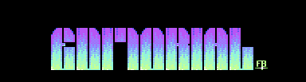11)Endlich ist es da : X-DOME !!!!
Aufgrund enormen Zeitmangels wird die-
ses Editorial kurz.
In dieser ersten Ausgabe, findet ihr
nicht sooo viel Texte, aber für den
Start ist das beträchtlich hoch!
Großes Sorry, übrigens, daß wir die
Mitglieder unter euch so lange haben
warten lassen.
Also - schreibt texte für X-Dome,
zeichnet Logo+Pics und composet wie
das Zeug hält!!
Hoffend auf eine gute X-Dome-Zukunft,
🮕🮕🮕🮕🮕🮕🮕🮕🮕🮕 ACME & ERROR 2000 🮕🮕🮕🮕🮕🮕🮕🮕🮕🮕🮕
{kind=link}
x - D O M E ✻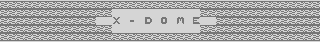
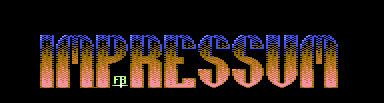22) I M P R E S S U M
DER CROSS-DOME-CLUB!
Der X-Dome-Club ist die beste Alterna-
tive für jeden C64-User. Neben diesem
genialem Diskmag bekommt ihr einen
speziellen Clubservice, bestehend aus
den diversesten & orginellsten Extras.
Mit "Extras" sind z.b. Audio-Tapes,
Papermags (nicht nur C64!), Covers,
Bonusdisks etc. gemeint. Neben diesem
Angebot,inkl. Diskmag, bekommt jedes
Mitglied die vielversprechende
Programmdisk als Beilage, auf der
Kurs-Programme, Spiele-Previews oder
einfach Games, Utilities, Demos,
Grafix, Musax etc. enthalten sind.
Für die Einsteiger unter euch sind
einige dieser und anderer Begriffe
vielleicht etwas "zu hoch". Aber dafür
gibt's die Redaktion von Crossdome und
natürlich die Erklärungen, die ständig
bzw. manchmal im Diskmag zu finden sind.
was die Kosten betrifft... eine
Mitgliedschaft ist viel günstiger und
ergiebiger als die X-Dome-Ausgaben (und
das ohne Clubservice & Programmdisk)
einzeln für 5DM zu ergattern.
DENN EINE HALBJAHRESFRIST MITGLIED-
SCHAFT KOSTET NUR 18DM.!!
Die Jahresfrist wurde aus einigen Grün-
den abgeschafft. An die Leute, die schon
voher eine Jahresfrist bestellt haben :
Keine Angst, IHR bekommt eure Mitglied-
schaft für ein Jahr!
Also, nutzt dieses Angebot aus, denn ab
dem Juli'96 wird's X-Dome wahrscheinlich
entweder nicht mehr geben bzw. X-Dome
verwandelt sich in ein kostenloses Mag
oder es wird weiterhin
von Discount 2000 und anderen
Herstellern/Versandhäusern kommerziell
vermarktet werden, den Club wird
es aber nicht mehr geben!
Nun, bevor alles vorbei ist, solltet
ihr den Club jedoch nicht verpassen!
X-DOME ERSCHEINT ALLE 6 WOCHEN!
X-DOME DARF NICHT EINFACH WEITERKOPIERT
WERDEN!
X-DOME DARF NUR WEITERGEGEBEN WERDEN,
WENN 5 DM VERLANGT WIRD!
(Gilt nicht für Ausgabe #1)
= == === ==== =========== ==== === == =
= == === === Redaktion === === == =
= == === ==== =========== ==== === == =
Leiter, Erfinder und Verantwortlicher
für X-Dome :
S.U.C.K/ACME/ERROR 2000
Arman Behdad
Hauptstr. 14
65345 Eltville
Tel.: 06123/972088
Stellv. Leiter :
THE PINK PUNKER/ACME/ERROR 2000
Armin Beck
Sissiweg 8
86551 Aichach
Tel.: 08251/52655
Coder des Magazinsystems :
MIST/ERROR 2000
Michael Steil
Eittingerstr. 11 b
85459 Berglern
Tel.: 08762/2032
(Achtet auf eure Telefongebühren!)
Reperatur-Service & Hardware-Anfragen :
HANNI/ACME
Marco Hannemann
Pritzwalkerstr. 16
19348 Perleberg
Tel.: 03876/786489
PD/FW/SW-Service :
RAM MAN/ACME
Daniel Himmel
Alois-Degler Str. 18
76571 Gaggenau
Tel.: 07225/919143
░░░░░░░░░░░░░░░░░░░░░░░░░░░░░░░░░░░░░░░░
░░░ SCHICKT EURE LESERBRIEFE AN : ░░
░░░░░░░░░░░░░░░░░░░░░░░░░░░░░░░░░░░░░░░░
░░░░░░░░░░░FAT BOB/ERROR 2000░░░░░░░░░░░
░░░░░░░░░░░Sascha Karschner░░░░░░░░░░░░░
░░░░░░░░░░░Sophienstr. 77░░░░░░░░░░░░░░░
░░░░░░░░░░░99817 Eisenach░░░░░░░░░░░░░░░
░░░░░░░░░░░░░░░░░░░░░░░░░░░░░░░░░░░░░░░░
✻░░░░░░░░░░░░░░░░░░░░░░░░░░░░░░░░░░░░░░░░
Offizielle X-Dome-Verkäufer :
werden gesucht!
🭶🭶🭶🭶🭶🭶🭶🭶🭶🭶🭶🭶🭶🭶🭶🭶🭶🭶🭶🭶🭶🭶🭶🭶🭶🭶🭶🭶🭶🭶🭶🭶🭶🭶🭶🭶🭶🭶🭶🭶
AB SOFORT- DIE CROSS-DOME HOTLINE !!!!
>>> 08251 / 25655 <<<
✻🭻🭻🭻🭻🭻🭻🭻🭻🭻🭻🭻🭻🭻🭻🭻🭻🭻🭻🭻🭻🭻🭻🭻🭻🭻🭻🭻🭻🭻🭻🭻🭻🭻🭻🭻🭻🭻🭻🭻🭻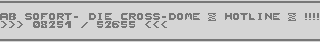
IHR SEID AN DER REIHE!
Wer von euch wollte mal so richtig
an einem kommerziellen Mag der Szene
beteiligt sein? Nun habt ihr eine
Chance, kompetente Texte zu schrei-
ben, mit Leuten aus der C64-Szene
zu korrespondieren, eure Meinung
auszulassen, über etwas Brandneues
zu berichten, etwas/jemanden zu pa-
rodieren, anderen Lesern zu helfen,
zu Problemen Fragen stellen usw.usw...
Jeder Textbeitrag, der unseren Vor-
rausetzungen (hierzu später) ent-
spricht, wird vollkommen und ohne
irgendwelche Zensuren veröffent-
licht.
DIE X-DOME REDAKTION UEBERNIMMT KEINE
VERANTWORTUNG UEBER INHALT, WAHRHEITS-
GEHALT UND RICHTIGKEIT DER TEXTE#
NIEMAND HAT EIN "RECHT", DASS BEITRÄGE
DESJENIGEN/DERJENIGEN VERÖFFENTLICHT
WERDEN!
░░░░░░░░░░░░░░░░░░░░░░░░░░░░
╭🭸🭸🭸🭸🭸🭸🭸🭸🭸🭸🭸🭸🭸🭸🭸🭸🭸🭸🭸🭸🭸🭸🭸🭸🭸🭸╮
│ TEXTBEITRAEGE FÜR X-DOME │
🭸🭸🭸🭸🭸🭸🭸🭸🭸🭸🭸🭸🭸🭸🭸🭸🭸🭸🭸🭸🭸🭸🭸🭸🭸🭸╯
✻░░░░░░░░░░░░░░░░░░░░░░░░░░░░
Auf welches Material sollen die Texte?
Eure Texte könnt ihr entweder auf
Papier oder mit dem Voodoo-Noter,der
auf dieser X-Dome, inkl. Anleitung
zu finden ist schreiben. Den fertigen
Text/die fertigen Texte (in diesem
Fall spielt es keine Rolle, wieviel
Texte es sind. Je mehr Beiträge,desto
besser! Sogar Unmengen von 40 Blättern
sind erwünscht!) schickt ihr an
S.U.C.K/ACM/ER2 () (die Addy findet ihr
am Anfang dieser Rubrik und mehrmals
im Mag.). Uns ist es viel lieber und
hemmt eine Menge an Arbeit, wenn ihr
eure Texte mit dem Voodoo-Noter
schreibt.
Was ist, wenn der Text nicht
veroeffentlicht wird?
Wenn dies der Fall ist, dann sind
entweder die Vorrausetzungen nicht
beachtet worden, es ist ein Mißver-
ständnis eingetreten, es gab techni-
sche Schwierigkeiten, es gab einen
"Schlampismus", so, daß der Text
unfreiwillig vernichtet wurde oder
der Text ist gar nicht angekommen!
Falls euer Text in der daraufolgenden
Ausgabe nicht erscheint, einfach mal
telefonisch bei S.U.C.K melden und
fragen, was los sei.
Übrigens : Diese Fälle da oben sind
nur sehr selten/treten fast nie auf!
DAS SOLLTET IHR BEACHTEN!
✻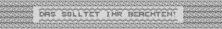
￭ Wir werden keine Texte veröffent-
lichen, die zu unkonkret geschrieben
sind, es sei denn, der Erfasser
hat die Möglichkeit, den Text
etwas verständlicher zu korrigieren.
￭ Achtet auf die Kompetenz eurer
Beiträge! X-Dome ist einfach keine
Digital Talk oder CF, wo jeder
subjektive Tests, Meinungen, die
keiner kapiert, langweilige Bei-
träge usw. hier ablagern kann.
Dies soll kein Vorwurf zur dt oder
zm cf sein! Es ist nämlich absolut
schwachsinnig eine subkektive
Meinung hier loszuwerden. Jemand
wertet z.b. ein Spiel sehr schlecht,
der andere springt in die Meinung
rein und sagt, daß das Spiel super
sei, ein anderer widerspricht, der
andere sagt doch usw..., und nach
5 Ausgaben stehen sie immer noch
im Streit. Und deswegen - bitte nur
objektive Tests von objektiven
Testern!
Auch sollen Themen ausgesucht wer-
den, die informativ, humorvoll,
meinetwegen auch sarkastisch+derb,
vielleicht sogar umwerfend sind oder
einfach gut geschrieben sein.
￭ Zensieren werden wir in Zukunft
wenig bzw. nichts! Nicht mal unnötig
derbe Schriftzüge!Das kommt ganz auf
euch selber und dem Text an.
Wenn ihr etwas scharf und gnadenlos
kritisiert bzw. euch über etwas
grauenvolles unverschämt lustig
macht, dann könnt ihr unpassende
Wörter einsetzten.
Zensiert wird : Wenn ihr jemanden
gemein niedermacht, der/die eigent-
lich ein(e) ganz normale(r),
nette(r) und nützlicher Kerl/Dame
ist. Rassistsche Beiträge, die
andere Landsleute vergrölen.
￭ Jeder kann hier seine Texte
veröffentlichen, wenn die Adresse
angegeben wird. Ihr könnt euch
hier im Mag unter einem Pseudonym
bekannt geben. Anonyme Texte
brauchen keine Adresse. Solange
der Inhalt nicht zu aufwendig ist,
werden auch anonyme Texte veröffent-
licht.
￭ Bitte schreibt sauber und lesbar!
Bevorzugt werden Texte, die mit ei-
nem Computer gedruckt wurden/mit
einer Schreibmaschiene getippt wur-
den. Benutzt bei handschriftlichen
Texten nur einen blauen oder
schwarzen Stift und schreibt nach
Möglichkeit bitte in Druckschrift.
░░░░░░░░░░░░░░░░░░░░░░░░░░░░░░░░░░░░░░░░
░░░░░░░░░░░░░░░░░░░░░░░░░░░░░░░░░░░░░░░░
░░░░░░░░░░░░░░░░░░░░░░░░░░░░░░░░░░░░░░░░
🭸🭸🭸🭸🭸🭸🭸🭸🭸🭸🭸🭸🭸🭸🭸🭸🭸🭸🭸🭸🭸🭸🭸🭸🭸🭸🭸🭸🭸🭸🭸🭸🭸🭸🭸🭸🭸🭸🭸
Vorschläge, Verbesserungen & Kritik
werden sehr gerne angenommen!
🭸🭸🭸🭸🭸🭸🭸🭸🭸🭸🭸🭸🭸🭸🭸🭸🭸🭸🭸🭸🭸🭸🭸🭸🭸🭸🭸🭸🭸🭸🭸🭸🭸🭸🭸🭸🭸🭸🭸
X-PROGS
Wer seine Programme in der Crossdome
veröffentlichen will, kann das gerne
machen. Allerdings bekommt das Prog
keinen Copyright! Das Programm soll-
te frei von rechten Dritter und ab-
solut freikopierbar sein.
🭸🭸🭸🭸🭸🭸🭸🭸🭸🭸🭸🭸🭸🭸🭸🭸🭸🭸🭸🭸🭸🭸🭸🭸🭸🭸🭸🭸🭸🭸🭸🭸🭸🭸🭸🭸🭸🭸🭸🭸
CHTUNG!!ACHTUNG!!ACHTUNG!!ACHTUNG!!ACHTUNG!!A
✻🭸🭸🭸🭸🭸🭸🭸🭸🭸🭸🭸🭸🭸🭸🭸🭸🭸🭸🭸🭸🭸🭸🭸🭸🭸🭸🭸🭸🭸🭸🭸🭸🭸🭸🭸🭸🭸🭸🭸🭸
Wir suchen Leute, die bereit sind für
X-Dome LOGOS & MUSICS zu erstellen!!!!
die Logos müssen im Koala-Format und
höchstens 60-Pixel hoch sein.
Die Musics müssen bei $1000-$2000 lie-
gen (init:1000, jsr:1003) .
Allen Aktivisten danken wir im voraus!
Wichtig : Fragt erst telefonisch bei
S.U.C.K nach, bevor ihr ein Logo/Zak
erstellt!
!! DER EINSENDESCHLUSS IST DER !!
!! 24.8.95 !!

!! X-DOME #2 ERSCHEINT MITTE SEPTEMBER !!
✻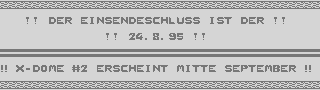
88) Wir hoffen, daß X-Dome euch voll und
ganz gefällt. Es sind übrigens auch
schon Worte gefallen, daß X-Dome in
Englisch rauskommen sollte. Noch ist
das nur ein Gerücht.
Suck hatte zu dieser Rubrik noch mehr
geschrieben, aber auf unerklärliche
Weise gab plötzlich die Diskette mit
dem Text den Geist auf und das hier ist
alles, was ich (Mist) retten konnte. Wir
werden versuchen, in Zukunft, bessere
Disketten zu benutzen...
{kind=link}
I N T R O D U C T I O N

Bestimmt kommt bei einigen die Frage
auf : "Wer oder was ist Acme und Error
2000?". Wir sind seit ca. einem halben
Jahr entstandene Groups, die euch
demnächst mit Demos, Tools und natür-
lich X-Dome verwöhnen wollen.
der Name "Acme" dürfte den Cartoon-Ken-
nern bekannt sein. Acme wird in Zukunft
viel, aber nicht -nur-, cartoon-stuff
rausbringen.
In dieser Rubrik stellen sich übrigens
einige vor, alle anderen konnten sich
aus einigen (z.t. mir peinlichen)
Gründen nicht introducen..
░░░░░░░░░░░░░░░░░░░░░░░░░░░░░░░░░░░░░░░░
MEMBERSTATUS ERROR 2000 :
Mist : Code
Fat Bob : GFX & Code
tpp : Code
S.U.C.K : GFX & Design
tdb : Swap
Checky : Code
Wie ihr merkt sind Phuture,
Dr.Warpzone und Koopa Troopa gekickt
worden, da sie nur mangelnde bzw.
gar keine Leistungen vollbracht haben.
Wir suchen übrigens weiterhin Members,
besonders Composer & Swapper, ebenso
wie GFX'ler, die fähig sind, richtige
"Pics" (und keine Logos) zu zeichnen.
MEMBERSTATUS ACME :
Hanni : Composing, Lead, Code Knulle : Composing
Ram Man : Code & Swap
S.U.C.K. : GFX
Max : Scan & Convert
Shooter : GFX
tpp : Code
Rene Lerch : Code
Checky : Code
Rene Lerch ist der Programmierer von
Riddles & Stones!
Wir stellen uns vor...
✻99)
Teddy de Baer
Mein richtiger Name ist Thomas B. und
bin 15 jahre alt. Am liebsten seh'
ich mir Demos an oder spiele irgend-
welche Games. Ich habe meinen C64 seit
1990 und mein System ist:
2 C64 II, 2 1541.II, Goldstar Monitor,
Seikosha SP-1200vc, 400 Disks und ne
Reu 1764.
Etwas Interessantes noch: Mein Pseudo
ist der Name eines Fussball-Spielers
aus Holland, der mal in der 1. Bundesliga
spielte und dessen Namen ich schon immer
mal wollte.
Desweiteren möchte ich ein Adventure
machen. Wer mich unterstützen möchte,
sollte mir doch mal schreiben.
Meine Arbeit bei Error 2000 ist das
Swappen und ich greif
Spike bei der Tiger Disk unter die Arme.
ich glaub das wars.
Also jeder, der PD Swappen möchte oder
nur reden, kann sich bei mir melden.
----------------------------------------
tdb/e2000
...
Eigentlich hatte ich mich ja schon im
BKC #3 vorgestellt, aber auf besonderen
Wunsch von tpp kommt hier nochmal 'ne
Zusammenfassung :
Pseudo: Checky Kurzhandle : cky
Group : Acme/Error 2000 'Job': Coder
Alter : 16 Jahre (06.11.1978)
Größe : Irgendwas bei 170cm
Augenfarbe: graublau
Hobbies : Compi !!, Basketball, TV/Video,
Musix,.....
Lieblingsessen: Alles was genießbar ist
Trinken : siehe oben
Demo : Coma Light 12, World of Code 3,
Acces Denied
Game : Turrican 2, Riddles 'n' Stones
So, that's enough.
...
S.U.C.K
Yo Dudes!!
Ich bin Leiter und Erfinder des X-Dome
und arbeite bei Acme+E2000 als GFX'ler
und gebe Tips zu Demo-/Tool-Designs.
Aufgrund höhere Arbeitsbelastung will
ich keine Contax mehr! Ich habe schon
genug mit X-Dome um die Ohren..
Auf einen netten Friendship von Anfän-
gern lasse ich mich dennoch ein.
In so einer Art wie Checky's Vorstellung
will ich meine Favoriten etwas bekannt-
geben :
Alter : wird nicht verraten
Haar- & Augenfarbe : (fast) schwarz
Hobbies : Video, Basketball, Taekwon-Do,
mit diversen C64-Tools arbei-
ten, abends ausgehen, Parties,
Disco.
Game : Turrican II, Sleepwalker
Mag : Antinationale, Shout!, Ragged (!!)
Demo : Access Denied, Radionapalm,
Courtesy of Soviet
Musikrichtung : Techno, von Trance bis
Gabba.
Filme : Tanz der Teufel Trilogie!
Wer mit mir Techno-Tapes swappen möchte,
kann das gerne machen. Ich bin übrigens
der Labertyp schlechthin!
------
Zu den anderen, die sich nicht
vorstellen...
Hanni : Er übernimmt den Reperatur-Ser-
vice von X-Dome. Ab der Ausgabe
#2 wird er auch aktiv seine
Hardware-Rubrik unterstützen.
Sein Composing ist echt nicht
schlecht.
Knulle : Keine Ahnung, was dieser Mem-
ber macht. Für X-Dome ist
er noch nicht tätig. Er soll
sich gefälligst melden!
Mist : Ein genialer Coder! In Zukunft
wird er die Assembler-Rubrik
aufheizen.
Anmerkung von Mist: Das hier wurde
geschrieben, bevor das Mag-System
entstand. Nacher wäre seine bewertung
wohl anders ausgefallen...
Ram Man : Auch ein guter Coder und wird
ebenfalls die Ass-Rubrik
ünterstüzten.
Fat Bob : Er paintet besser als er
codet! Seine Pics sollen
sehr gut sein.
tpp : Ein wirklich schlampiger Kerl!
Aber auch genauso wichtig für
X-Dome. Seine coderischen Künste
erreichen den oberen Druchschnitt.
Für einen Laberkontakt kann ich
sagen : kontaktet diesen..diesen..
Max : Viel weis ich von ihm nicht, aber
er soll über 30 Jahre alt und
nicht soooooo aktiv sein.
Er scant eben Fotos für Acme.
Shooter : Ein neuer GFX'ler für Acme.
mehr weiß ich wirklich nicht
von ihm!
SUCK
Einige Vostellungen sind noch
eingetrudelt, nachdem SUCK die Rubrik
schon fertiggestellt hatte: (Mist)
HALLO HIER IST DER PINK PUNKER!
Ich möchte die Gelegentheit nutzen
und mich mal kurz vorstellen.
Vorname:Armin
Nachname:Beck
Strasse:Sissiweg 8
Wohnort:86551 Aichach
Tel.:08251/52655 (always)
" /4235 (18-22 uhr)
Geboren am:20.07.77 in Schrobenhausen
Grösse:ca.177cm
Augenfarbe:blau
Haarfarbe:blond
Gewicht:62,5 kg (Kampfgewicht)
Hobby:Ringen,Frauen,C64
Best Sound:Only Cosmic
" Group:Reflex
" Coder:Quiss
" Demo:Radio Napalm
Gut das war's auch schon über mich.
Hier noch meine Greetings:
All Error 2000 Members,Acme,Metalvotze,
Cream,ucg,Avantgarde
Ok c u!
The pink punker of Error 2000 in 1995
----------------------------------------
Welcome Freax !
✻ AAAAAAAAAAAAAAA JB
Also ich bin der Hanni of Acme. Hier
in dieser Note werde ich einen Steck-
brief von mir schreiben also los gehts.
Buergerlicher
Name : Marco Hannemann
Adresse : Pritzwalker Str.16
19348 Perleberg
Groesse : 182 cm
Alter : 14 1/2 jahre jung
Schule : Hauptschule bzw. Gesammt-
schule
Lieblings-
essen : Putenschnitzel + Gemuese
trinken : Tonic,Radler etc.
schulfächer : Informatik,Sport,Physik
klamotten : Jeans, T-shirt, aber am
besten in schwarz
Hobby : Gammeln
Computer : Commodore vierundsechzig
Gruppen on 64: Chaos,Reflex
Demos on 64 : Absolute,Radio Napalm
Games on 64 : Riddles & Stones,Winzer,
Testdrive I,Working Stone
Musikgruppe : Sisters of Mercy
Lieder : First and Last and Always
Model : Claudia S.
Monate : Juli und Dezember
Tage : Samstag und Sonntag
Genug der Lieblings.. nun noch so allge-
meines Zeugs ueber mich.
Seit Anfang dieses Jahres bin ich in der
Gruppe Acme als Composer tätig, und ich
mach dann noch so nebenbei Reparaturen
am C-64 oder Floppy.Aber auch Basteleien
in Richtung Erweitung oder Verbesserung
des C-64 mach ich gern. Coden kann ich
auch zwar nicht so gut wie Ram Man,unser
bester Man in Sachen Coden,aber es langt
um einen Player fuer eigene Sounds zu
Coden. Yo dann mach ich erstmal Schluss.
Ich werde nur noch schnell ein paar
Leute gruessen; und zwar:
✻ ............... JB1111) ...............
RAM.MAN,S.U.C.K.,THE.PINK.PUNKER,MAX,
CHECKY,RAVEMAN,KNULLE,RENE.LERCH,LARS,
RANDY.J.,REGINA.HINDRICHS,BITBREAKER,
FAT.BOB,SHOOTER,ZONE.AND.ALL.I'VE.FOR-
GOTTEN. (wie z.b. mich (Mist))
Ciao bis bald sagt
Date:31.05.1995 Hanni / Acme
----------------------------------------
Ätsch, ich stelle mich jetzt auch noch
vor.
PSEUDO: mist
ABKÜRZUNG: mst (nicht zu verwechseln mit
m.strelecki!)
BÜRGERLICHER NAME: Michael Steil
Eittingerstr. 11b
85459 Berglern
JOB: Coder bzw. Schüler
SEIT: C64 seit 1989, Asm-Coden seit 1991
MEIN SYSTEM: 5 x C64
(alle fünf z.T. kaputt)
2 x 1541-II
(nur eine ganz o.k.)
1 x Mps 1550c
(braucht 'n Farbband!)
1 x Monitor c 1901
(seit Neuestem!)
2 x Final Cartridge III
(eine mag bei mir nicht)
1 x Maus 1351
(funktioniert!!!)
und in einigen Tagen:
1 x Flash-8, 1 MB
ach ja, und
1 x PC386 mit Soundblaster,
CD-Rom und Scanner
GRößE: weiß nicht
GEWICHT: =Taktzyklenanzahl einer Raster-
zeile im Border
ALTER: %10000=$10
WAS ICH MAG:
Tiefkühlpizza, Computer, Fußball
WAS ICH NICHT MAG:
Abstürze aller Art, Fehlermeldungen,...
WAS ICH SAMMLE:
Antike Computer und Computerchips. Ich
suche noch folgende CPU's (können auch
defekt sein):
I8086,I286,I486,Z80,MOS8510
LIEBLINGSFERNSEHSERIEN:
Star Trek - The Next Generation,
Picket Fences
LIEBLINGSFILME:
Back to the Future 1-3
Alles mit Steve Martin
Mist
Szene News
Impressum
Mag Reviews
Kleinanzeigen
{kind=link}
- S C E N E -------- N E W S - ✻
 1212)
1212) Diese News berichten nur über die C64-
Scene. Die Scene-News für diese Issue
sind zwar nicht unendlich , aber auch
nicht alt und öde. Und auf diesen Punkt
werden wir in Zukunft immer achten.
Falls DU heiße Neuigkeiten erfahren
hast, kannst du sie hier loswerden.
Aber bitte verwechselt diese Rubrik
nicht mit den "gewöhnlichen" News!
Ok, let's start...
--------------------------------------
S H O U T !
✻
Yohei Guys!
Did ya ever hear sumthing of the
Shout! Magazine? This is the successor
of the two mags of eqx+flt wich had the
names of ingenious brain & reformation..
Now the magazines got fusioned and the
first issue was released in March '95...
Two disksides pure information concer-
ning mainly the scene, coding, C64 in
general, internet and so on...
The coding of the magazines has set a
new standart as you can find
super-hires photos (!) and other pic-
tures in the text, many colors, fonts,
font types and so on. Just order an
issue to get a real high feelin' again..
CHRISTIAN GRÜN, TEL.: 0941/83988
Please send 10 DM for an issue and tell
me if you wanna get the latest issue
or the next which isn't released yet -
as one of the first!
If you wanna enter the scene you'll find
over 150 addies to write to !!
And if you have any wishes what should
be included in the next issue , please
write it down... see ya,
ANTIFAN
░░░░░░░░░░░░░░░░░░░░░░░░░░░░░░░░░░░░░░░░
Last Minute News!
Fast, Short & Very Important
✻░░░░░░░░░░░░░░░░░░░░░░░░░░░░░░░░░░░░░░░░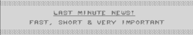
▪ ART DESIGN is dead! Firefox ist zu....
Smash Design gehüpft..
▪ AWT is dead ,too!. Ein member dieser .
ehem. Group hat jetzt die Group
"Cascade" gebildet.
▪ OXYRON schleuderte ihr neues Werk ins
Volk! das Demo heißt "Parts" und
ist 4 Parts lang. Es ist auf der
Prg-Disk enthalten.
▪ LASER is dead! ..
▪ "Bärtram, der Avabär" hatte sich in
"Unit-E" umbenannt. Nun hat er noch-
mals sein Handle in "Hardsequencer"
geändert. Wie wir aus der Digital
Talk wissen, ist er ein Tekkno-Freak.
Der name "Hardsequencer" hört sich
ja cool an, ist aber von einem
Tekkno-DJ entnommen oder eben (mehr
oder weniger) geklaut worden.
▪ BIS BOOST & GIZMO haben Paradox
gejoined.
▪ Nun ist das Mag VIEWTURE von MENTAL
erschienen. Eigentlich sollte ein
Review dieses Mags in dieser Issue
stattfinden, aber das wurde aus
folgenden Gründen abgesagt :
Die erste Ausgabe ist etwas mager.
Allerdings stand im Mag sowieso, daß
die erste Ausgabe, aus mangelnder
Zeit, eher ein Preview wurde...
▪ SPERMBIRD/EXCESS swapt aufgrund des
Zivildienstes jetzt langsamer.
▪ VENGIANCE hat ONSLAUGHT
gejoined.
▪ VENGIANCE hat neben SORCERER/EXCELLENT
auch die Group MEGASTYLE PRODUCTIONS
gejoined.
▪ SCHREDDER wurde aus ACME gekickt, da
seine meisten Grafiken gerippt wurden.
▪ Erst hieß er "Profi", dann "Nastyboy"
und jetzt SHOOTER!
▪ Und genau dieser Kerl hat ACME
gejoined!
---
Checky berichtet :
In der BKC #4 hatte Madrom/Cream ge-
geschrieben, daß AXIS und TTS von
OXYRON auf dem Amiga umgestiegen sind.
Nun, das stimmt nicht mehr ganz :
Axis hat sich entschlossen doch noch
für den C64 zu programmieren. Außerdem
hat BIZ KID CAMELOT gejoined.
________________________________________
Das waren die Scene-News dieser Issue.
Wie ist sie? Wie kann sie besser
gestaltet werden? Was ist zu verbessern?
Bitte beantwortet mir diese Fragen
bei Fat Bob's Leserbrief-Ecke...
S.U.C.K

ADDYCORNER
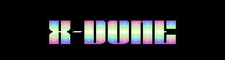Madrom/t-c/Cream
Sebastian A. Szczygiel
Klein-von-Diepold-Str.16/66
26721 Emden
-4 Friendship
-4 Joining Cream
-4 Scanning
-4 Slow swap,but always 101% reply to
all.
-4 Polish stuff
dst/Cream
Dennis Steinbach
Eitzumer-Hauptstr.56
31035 Despetal
Red Scorpion
Stefan Fabian
Hochstr.43
23554 Lübeck
Bugjam
Hartmut Pachl
Friedenstr.17
63755 Alzenau
Edwing/wsd
Jörg Raddatz
Rüppelstr.40
44789 Bochum
Calippo
Christoph Meitz
Koppeldamm 30
25335 Elmshorn
Mr. Chainsaw
A. Hense
Frankenhäuserstr.40a
06567 Seehausen
Hyper Dash
Stephan Schirmer
Lindenstr.8
91572 Königshofen
Little John/Paradox/t-c
Johannes Rinderer
Eckweg 20
A-6845 Hohenems
Ram Man/Acme
Daniel Himmel
Alois-Degler-Str.18
76571 Gaggenau
-4 Cool Swap
-4 Coder-Chat
-4 Joining Acme
-4 X-Dome
S.U.C.K./Acme/Error 2000
Arman Behdad
Hauptstr.14
65345 Eltville
Tel.:06123/972088
-4 Joining Acme/Error 2000
-4 Tekkno-tape-swap or chat
-4 Slow but good swap
-4 Covers & GFX
Raveman
Niels Przybilla
Walter May Weg 6
12353 Berlin
Leo
Leonard Schüller
Nelkenweg 10
83080 Oberaudorf
Sush
Sascha Nelle
Am Dachsacker 8
34266 Niestetal
Dark Fox/Raythrust
David Kilian
Buschkampstr.6
44625 Herne
Norbert Bittner
Feldherrnstr.60
44147 Dortmund
-4 Pd-Tausch
-4 Pd Verkauf
-4 Original soft (Tausch)
Teddy de Bär/Error 2000
Thomas Beringer
Schlösselmühle 1
85125 Kinding
Tel.:08647/336
-4 Friendship
-4 Cool swap
-4 X-Dome
Phuture/Error 2000
Matthias Magel
Nettelbeckstr.67
81929 München
089/9304146
-4 Pd Swap
-4 Pd Verkauf
Fat Bob/Error 2000
Sascha Karschner
Sophienstr.77
99817 Eisenach
-4 No more swap
-4 GFX
-4 Error 2000 stuff
-4 X-Dome
Drago mc Kayb/Metalvotze
Darko Malbasic
Regensburgerstr.58
94036 Passau#
-4 Joining Metalvotze
-4 The great mag antinationale
-4 Megaletter
Malic
Michaela Deutz
Mühlgrund 10
69412 Eberbach
-4 Digital talk
Zak
Gero Feuss
In der Runken 8
28203 Bremen
-4 Pd Verkauf
-4 Pd Swap
Fire fox/smash design (n.o.e.)
Günter Dahmen
Rosenstr.57
50678 Köln
-4 Pd swap
-4 Fast swap
-4 Cover swap
-4 Realy friendship 100% replay
Thomas Kopold
Haiyndstr.11
85084 Ingolstadt/Reichertshofen
The Pink Punker/Acme/Error2000
Armin Beck
Sissiweg 8
86551 Aichach
Tel.:08251/52655 (always)
08251/4235 (18-22 uhr)
-4 Joining Error 2000
-4 Demo swap
-4 X-Dome
-4 Anitnationale
-4 Real friendship
-4 Coder-chat
-4 Cosmic-tapes
Mist/Error 2000
Michael Steil
Eittingerstr.11b
85459 Berglern
08762/2032
-4 Coder-chat
-4 X-Dome
-4 Joining Error 2000
Hanni/Acme
Marco Hannemann
Pritzwalkerstr.16
19384 Perleberg
-4 Joining Acme
-4 Acme-stuff
-4 Good swap
Checky Acme/Error 2000
Thomas Martens
E.-Thälmann-str.17
23992 Neukloster
-4 Coder-chat
-4 Pd swap
-4 Friendship
Gut das war alles!
Wenn eure auch hier stehe soll,dann
schreibt einfach an einen Member von
Acme oder Error 2000.
Good bye!
{kind=link}
M A G - Reviews ✻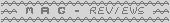
1515) Heute stelle ich euch die ANTINATIO-
NALE, ein anti-faschisten Mag und
MUMPITZ, ein kostenloses, nützliches
Papermag vor. Also fangen wir an!
⬤⬤⬤⬤⬤⬤⬤⬤⬤⬤⬤⬤⬤⬤⬤⬤⬤⬤⬤⬤⬤⬤⬤⬤⬤⬤⬤⬤⬤⬤⬤⬤⬤⬤⬤⬤⬤⬤
⬤⬤⬤⬤⬤⬤⬤⬤⬤⬤⬤⬤⬤⬤⬤⬤⬤⬤⬤⬤⬤⬤⬤⬤⬤⬤⬤⬤⬤⬤⬤⬤⬤⬤⬤⬤⬤⬤
⬤⬤⬤⬤⬤⬤⬤⬤⬤⬤⬤⬤⬤⬤⬤⬤⬤⬤⬤⬤⬤⬤⬤⬤⬤⬤⬤⬤⬤⬤⬤⬤⬤⬤⬤⬤⬤⬤
✻ ANTINATIONALE
Group : Metalvotze
Erscheinungsweise : unregelmäßig
> Polit-Diskmag <
ID's : 2
---
Gegen rechts! Fuck racism & stop facism!
Das sind einige Mottos der ATN. Ich
will euch die zweite Ausgabe, die im
Juli rauskam, vorstellen.
Zu Anfang will ich erwähnen, daß der
Groupname "Metalvotze" nix mit
"Metalfotze" zu tun hat! Fotze wird
in Bayern als Ohrfeige u.a. bezeichnet.
Trotzdem sind die Members von Metalvotze
versaut, hehe.
Back to the roots, nach dem laden des
Intro bekommt man das Hauptmenü zu
Gesicht. Es ist recht simpel aufgebaut :
ein cooles "Antinationale"-Logo von
Hardsequenzer schwebt über dem menü,
mit dem Stick (hoch+runter) kann
man die versch. Rubriken wählen.
In den Rubriken selbst kann man den
Text, a la nitro hoch + runter scrollen.
Über dem Text schwebt ein Logo.
Die Texte sind wirklich lang! Schon
beim Editorial fängt es an.
Der Inhalt : Die meisten Texte der ATN
sind niederschmetternd mit den derbsten
Ausdrücken, wie "Geht kacken Leute",
"Oh ist das geil, meine Hose ist nass"
(tiefer will ich nicht eingehen...)
ausgestattet. Einige Texte berichten
über den Rassismus heutzutage, wie und
wo sie geführt werden usw. Ford Prefect
z.b. berichtet über sämtlicher wider-
liche Polizei-Skandale, Ivanov legt
wieder mit seiner Punkrock-Rubrik los,
tpp berichtete über den Rassismus auf
dem Lande etc. aber auch Rechtsradikale
haben im Mag was verloren, einer ganz
gewaltig!! Aber in der ATN stehen nicht
nur Texte über Rassusmus, sondern auch
viel über die abgefuckte Politik heutzu-
tage u.a.
Jeder kann in der atn mitmischen. Aller-
dings sollte man nicht jeden kleinen
Scheiß reinbringen, sonst wird man
von den "Erfahrenen" platt gemacht!
Man nehme einfach den Cadgers Noter und
schreibt seine Texte in Form einer Note.
Danach schickt man den Text an Metal-
votze.
FAZIT : Die Antinationale ist einer der
wenigen Mags, die mal nicht viel mit
dem C64 zu tun hat (es sei denn, es sind
Reports über C64-Parties drin. dieser
Fall tritt in der zweiten Issue auf).
Wenn man die ATN bis zum Ende gelesen
hat, dann ist es manchmal unmöglich
gar nichts für das Mag zu schreiben.
kurz und bündig : für alle harten
nerven ist die ATN genial !!
Die Antinationale #1 & #2 erhaltet ihr
im cross-shop.
▃▃▃▃▃▃▃▃▃▃▃▃▃▃▃▃▃▃▃▃▃▃▃▃▃▃▃▃▃▃▃▃▃▃▃▃▃▃▃▃
▂▂▂▂▂▂▂▂▂▂▂▂▂▂▂▂▂▂▂▂▂▂▂▂▂▂▂▂▂▂▂▂▂▂▂▂▂▂▂▂
▁▁▁▁▁▁▁▁▁▁▁▁▁▁▁▁▁▁▁▁▁▁▁▁▁▁▁▁▁▁▁▁▁▁▁▁▁▁▁▁
✻ MUMPITZ 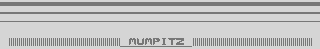
Erscheinungsweise : monatlich
> Kostenloses Multi-User-Papermag <
Mumpitz ist ein hübsches, handliches
und informatives Papermag. Der Heraus-
geber gibt sich wirklich Mühe.
Die Auflage bleibt bei 60 Stück.
Auch Beiträge werden veröffentlicht.
Ich werde mich übrigens davor hüten,
ein Papermag zu kritisieren, das von
einem netten Menschen herausgegeben
wird und auch noch kostenlos ist.
Jeder kann das Mag gegen 1DM Porto
bekommen, undzwar bei :
Hans-Christof Tuchen
Lotzestr. 10
12205 Berlin
C ya,
S.U.C.K.
{kind=link}
KLEINANZEIGEN

Hier könnt ihr kostenlos private
Kleinanzeigen unterbringen.
Die Länge der Anzis ist egal,
hauptsache es wird kein Roman.
- - - - - - - - - - - - - - - - - - - -
Verkaufe viele KASSETTENSPIELE :
Puzznic 10 DM, Slayer 5 DM, Orion 5 DM,
Lightforce 5 DM, Zamzara 5 DM,
X-Out 10 DM, Cloud Kingdoms 10 DM,
Kong 3 DM, Petch 3 DM, Garrison 10 DM,
Input 64 7/85 (kassette) 10 DM,
Ausserdem auf Modul : Wizard of Wor
5 DM, Jack Attack 5 DM, auf Disk :
F-16-Combat Pilot 20 DM, American Club
Sports 15 DM,Elven Warrior 10 DM.
Adresse : Daniel Himmerl, Alois-Degler-
Str.18, 76571 Gaggenau.
Verkaufe SWITCHBLADE für 25 DM auf
Disk (np 50 DM), STAR CONTROL für
25 DM auf Disk (np 50 DM) auf Disk.
Daniel Himmel, Alois-Degler-Str. 18,
76571 Gaggenau.
Verkaufe GAME ONs für je 5 DM :
12/91, 6/92, 9/92, 10/92, 11/92, 12/92.
Daniel Himmel, Alois-Degler-Str. 18,
76571 Gaggenau.
Verkaufe Originaleingeschweißte
GAMES : Cool World, WWF 2, je 12 DM,
riskant, 10 DM, Thalamus the hits
1986-1988, 15 DM. Versandkosten = 5 DM.
Arman Behdad,Hauptstr. 14, 65345 Elt-
ville.  06123/75520.
06123/75520.
Verkaufe Original-Eingeschweißte :
ATARI-ST-SPIELE :
Starbyte Super Soccer, 15 DM,
The Nightbreed - Action Game, 8 DM,
Projekt Prometheus, 8 DM,
S.T.U.N.Runner, 10 DM
Virtual Reality- The Collection, 15 DM.
Arman Behdad, Hauptstr. 14, 65345 Elt-
ville. 06123/75520.
Phuture pd-Service
Matthias Magel
Nettelbecksrt.67
81929 München
...immer die neueste und heisseste
pd-Software für den C64.
Jede Diskette 1DM !oder Tausch.
Verkaufe ein paar original Games:
Indiana Jones 3 (Action-Game),Loopz,
Night Breed,Lemmings und Crime Time
Wer Interesse hat schreibt mir:
tpp/Error 2000
Armin Beck
Sissiweg 8
86551 Aichach
Hallo Composer!
Error 2000 sucht nocht Composer.Wer
Interesse hat,schreibt an einen der
Error 2000 Member.
Kennt ihr schon das neue Mag ?
Es heisst "Anitnationale".
wer's haben will schreibt an:
"Paradies"
Postfach 2229
21217 Meckelfeld
Germany
{kind=link}
----- N E W S ----- ✻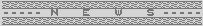1818)
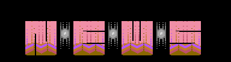 Ich schreibe diese Rubrik nun zum
zum dritten Mal, verdammt!!!!
Hier findet ihr allgemeine News, also
nichts über die C64-Szene.
▪ Das Multi-User-Mag PLAY TIME wurde
eingestellt. Die (Doppel-)Ausgabe
8+9/95 war die Letzte. Der Grund :
die Zeiten für reine Multi-User-
Mags sei, laut der Redaktion, vorbei.
▪ Seit ihr in Disketten-Not? Eine Al-
ternative wäre ARNOLD ALISCH,
STETTINER STR.7, 26197 AHLHORN.
bei diesem Herr kostet ein Noname-
Pack 2.10DM und ein Pack Markendisks
2.60DM. Ein Disketteneinkauf bei
dieser Anschrift ist besonders für
Großeinkäufe von 100-1000 und mehr
Packs geeignet. Rabatt ist möglich.
▪ Endlich mal etwas anderes! Wer hätte
gedacht, daß ein reines Musikmag
für den C64 erscheint! Der Name
ist PASSION und erscheint in eng-
lischer Sprache. Für alle Musik-
geschmäcker ist was dabei, ob Rock,
Metal, Punk, Pop, Klassik, Techno
oder einfach Crossover, es ist egal.
Der Inhalt wird von Lesrn geschrieben
und besteht hauptsächlich aus Charts
und Reviews. Wer Reviews schreiben
möchte, soll sich an mich wenden.
Die erste Ausgabe der passion
erscheint Ende August/September.
▪ GEOS 3.0 wird,laut Dreistein nicht
mehr erscheinen.
▪ Der ZWEITE TEIL von BERANIA wird mit
Sicherheit nicht mehr für den C64 er-
scheinen! Die Verkaufszahlen des
ersten Teils waren nur zufriedenstel-
lend.
▪ OCEAN hat die Herstellung von C64-
spielen höchstwahrscheinlich einge-
stellt. Seit 1992 ist von ihnen bis-
her nichts erschienen.
■
Howdy Pals!
Dies ist ein Artikel von Antifan/eqx...
Da ich viel mit Printfox arbeite und
mich die Schriftenvielfalt am 64er
schon immer ffasziniert hat, habe ich
in den letzten Jahren bis heute ca.100
DEMO-/SPIELZEICHENSäTZE ins ZS-FORMAT
von PRINTFOX konvertiert. Nun habe ich
beschlossen diese Diskette für lächer-
liche 10DM zu verkaufen, aber ihr
bekommt nicht nur 100 Fonts, sondern
auch :
- einen Ausdruck aller Schriften!
- einen 11x2 und 2x2 -> Printfox-
Converter !!
- ...das Angebot von mir, für eine klei-
ne Gebühr beliebige C64-Schriften
ins pfox-Format konvertiert zu
bekommen !!
Ich habe diese Diskette nicht nur
zusammengestellt, um Geld zu verdienen;
angesichts der Zeit, die ich dafür
inverstiert habe, müßte ich eh mehr
Geld verlangen. Nun hoffe ich aber auch,
daß ich auf eure Ehrlichkeit, die
Diskette nicht zu kopieren, sondern bei
mir zu bestellen, vertrauen kann!!
10 DM sind doch noch bezahlbbar, oder?
Hier meine addy :
CHRISTIAN GRÜN
AM HERRNBERG 31
93138 LAPPERDORF
P.S.: Bitte zahlt immer per Vorkasse in
bar; das ist der billigste und
schnellste Weg!!!
Antifan
■ ■
Hallo Leute!
MR.LEE/CASCADE hat zwei verbesserte
Versionen des ASSBLASTERs rausgebrracht!
In der Version 2.2 sind die Fehler der
Version 2.1 beseitigt. Der Assblaster
V3.0 hat dann noch ein paar neue
Funktionen. Wer beide Assembler haben
will, kann sie bei mir haben (Addy steht
im Addy-Corner).
PHOENIX/HIGH-TECH
■ ■ ■
Jetzt gibt es ihn wieder:
Den BROTKASTEN LIVE! Als dieses Zine
vor ein paar Monaten mangels
Geldes/Lesern u.s.w. zugrunde gegangen
oist, nahm ich mir vor, das Mäg weiter-
zuführen, und nun ist es soweit: Im
Oktober erscheint dir erste Ausgabe
des BROTKASTEN LIGHT!
Denen, die den BKL nicht kannten, möchte
ich kurz das Prinzip dieses Zines
erläutern : (alle anderen können gleich
zum näxten Abstaz springen...). Der
BKL lebt vom Mitmachen. Es gibt kein
Redaktionsteam, das die Texte verfaßt.
die Redax ist nur fürs Eintippen/Drucken
usw. verantwortlich. Der Leser
allerdings ist für den Inhalt zuständig.
Er schreibt Tests, Tips, Infos, usw.,
versieht sie mit der Rubrik-Nr. (es gibt
über 70 verschiedene Rubis) und seinem
Pseudonym/Namen und schickt sie ent-
weder auf Papier oder auf Disk
(3,5", PC-ascii) an die Redax. Dabei
können in jeder Rubrik auch Fragen
gestellt und Antworten gegeben werden
(im prinzip so ähnlich, wie im
Computer Flohmarkt).
Alles klar? Dann weiter im Text: Der
Brotkasten Light wird 5.- DM + 3.- DM
(Porto) kosten. Er erscheint am ersten
Oktober. Wer das BKL-Infoblatt haben
will, sollte mit 1.- DM Rückporto
schicken (Briefmarke). Wer noch Fragen
hat, kann mich anrufen: (03561) 6326.
Meine Addy : MICHAEL EBERT (BKL),
KARLSTR. 25, 02149 FORST.
Cu at Brotkasten!! Bye!
Anm.v.SCk.: X-Dome-Mitglieder brauchen
sich das BKL-Infoblatt nicht
zu holen, es liegt bei!
Meiner Meinung nach, solltet ihr die
pfox-Disk von Antifan kaufen (egal
ob ihr pfox habt oder nicht!),
dem Phoenix glauben und euch im
Oktober den BKL holen und Texte für
das Teil zu schreiben!!!!!!
Übrigens : wenn diese Rubrik das
vierte Mal abfuckt, dann könnt ihr
eine News-Rubrik für die erste
X-Dome vergessen!!!!
----------------------------------------
Jetzt noch ein Bericht über den PC64 von
tpp (Mist)
Ein Feuerwerk technischer Gags:
Der PC64 Minitower
Wer schon immer einmal davon geträumt
hat, seinen c64 als "echten" PC auf dem
Schreibtisch stehen zu haben, kann sich
freuen: Performance Peripherals präsen-
tierte auf der "Hobbytronic" in Dort-
mund vom 10. bis 14. Mai zum ersten Mal
den "PC64 Minitower", der die Commodore-
geräte C64, Floppy 1541 und 1581 sowie
mehrere technische "Leckerbissen" in
einem PC-Minitower-Gehäuse vereint.
der Clou dabei ist die mitgelieferte
Tastatur des C128d, die sich an einem
eigenen Tastatur-Port anschliessen läßt.
Nicht nur die gewohnten C64-Tasten sind
funktionsfähig, auch alle weiteren, die
sonst nur beim 128 funktionieren:
Der Zehnerblock ist direkt funktionsfä-
hig (mit einem Komma auf der Punkt-Taste
zum komfortablen Eingeben von Data-zei-
len),die Cursor-Tasten sind nun lebendig
geworden, auch alle weiteren 128er-Keys
sind ansprechbar.
Möglich gemacht wird dies durch ein spe-
ziell dem Minitower angepasstes Be-
triebssystem ähnlich dem bekannten Exos:
es enthält neben dem Tastatur-Treiber
auch einen 15mal schnelleren Speeder und
nützliche Features, unter anderem eine
sinnvolle Belegung der Funktionstasten.
Das geänderte Betriebssystem ist nicht
etwa immer aktiv, es lässt sich bequem
ausschalten bzw. zum normalen C64-System
umschalten: mit Hilfe der Turbo-Taste am
PC-Gehäuse. Ebenso ist der Reset-Knopf
am Minitower analog zum C64-Reset: drük-
ken genügt, und ein Warmstart setzt das
system zurück.
PC-Kenner werden sich jedoch auf der
Messe wundern, welcher "Prozessor" wohl
in dem System steckt: eine freche "64"
leuchtet ihm entgegen,deutet aber gewiss
nicht auf die Rechengeschwindigkeit hin,
sondern auf "C64 inside". Ein interner
PC-Lautsprecher sowie eine akkugepuffer-
te Echtzeituhr sorgen ebenfalls für ein
PC-Gefühl. hinzu kommt, daß auch die
Harddisk-LED leuchet, obwohl eine Fest-
platte nicht eingebaut ist - vielmehr
werden Datenbewegungen am serielle Bus
angezeigt, zum beispiel beim Lesen und
Schreiben von Daten auf Diskette.
ein weitere Clou im Minitower:
Anstelle der Laufwerkmechanik der 1581
steckt ein nagelneues HD-Laufwerk von
Mitsumi im Gehäuse. Zusammen mit der
originalen 1581-Elektronik ergibt sich
für den Anwender kein Unterschied zur
"normalen" Commodore-Floppy. Voreinge-
stellt ist die (umschaltbare) Geräte-
adresse 9, da die meisten Anwender ihre
1581 als Zweitlaufwerk benutzen.
Im "Messe-Tower" auf der Hobbytronic ist
noch eine 1541 eingebaut, die als Haupt-
laufwerk fungiert. Der 15fache Schnella-
der arbeitet problemlos mit den Laufwer-
ken 1541,1570 und 1571, beim Laden von
der engebauten 1581 muss allerdings das
Multifunktions-Betriebssystem ausge-
schaltet und zum Standardsystem gewech-
selt werden.
Zu den technischen notwendigen Umbauten
gehört auch, daß alle C64-Anschlüsse
nach hinten ausgeführt werden. Joystick-
ports,tastaturanschluß und der serielle
Bus sind stabil eingebaut,Drucker und
Userport bekamen jeweils eine eigene
Sub-D-Buchse. Wer seine alte Userport-
Erweiterung anschliessen will,steckt ei-
nen Adapter dazwischen, wie er schon von
den Userport-Switchboxen von W&M bekannt
ist.
Wer seinen älteren CBM-Drucker seriell
anschliessen will,kann dies-wie gewohnt-
über die IEC-Buchse tun.
Handelt es sich um einen Centronicsdruk-
ker, kann er entweder parallel über die
Sub-D-Buchse des Userports angeschlossen
werden oder seriell über das eingebaute
Interface W&T 92000 für Epson-komparti-
ble Drucker.
Besonders anwenderfreundlich sind drei
sepereate Cinch-Buchsen: Video out,Audio
out und sogar Audio in - zum Anschluss
eines Monitors (passendes Kabel wird
mitgeliefert) oder für den,der z.b. sein
Radio anschliessen will.
Vollends zum PC wird das C64-System,wenn
ein Gerät in den Expansionspport ge-
steckt werden soll. Dann heisst es:"Es
lebe das PC-Feeling!"-also das Gehäuse
aufschrauben und im geordneten "Kabel-
chaos" das Modul oder die Speicherer-
weiterung aufstecken.
Problemlos möglich ist dies mit den Mo-
dulen Final Cartridge,Action Replay u.a.
BBG-Rams und 1750-Clone sowie auch der
Flash 8,mit Hilfe eine Winkelsteckers
auch Geo-Ram. Weil das Mini-Tower-Ge-
häuse Standardgrösse hat und keinen Um-
bau erlaubt, lassen sich die Commodore-
reus nicht einstecken - sie würden zur
Seite aus dem Gehäuse rausragen. Aller-
dings arbeitet man bei Performance Peri-
pherals noch an einer Lösung.
Dafür gibt es keine Probleme in Sachen
Leistung:das 200-Watt-Netzteil des PC-
Minitower versorgt nicht nur alle ein-
gebauten Geräte,sondern sorgt hat auch
noch "Kraft satt" für weitere.
Das Standardsystem beinhaltet den Mini-
Tower mit leistungsstarkem Netzteil,
allen technischen Umbauten und Gags, den
C64,die Floppy 1581,anschliessbare C128d
-Tastatur,Schnellader-Betriebsystem,
Software für Geos und Floppy-Tools. Für
499 Mark erhält der C64-Fan ein moder-
nes Gerät mit vielen Detaillösungen und
Gags. Für moderate Aufpreise gibt es
außerdem die verschiedensten Zusätze.
äüsserlich verrät am "PC64-Mini-Tower"
kaum etwas, daß hier "nur" ein C64
drinsteckt. Im Gegenteil: C64, 1581 und
eventuell noch 1541 und das Interface
W&T - macht zusammen 4 Prozessoren!
Und welcher PC-Besitzer hat soviele
schon in einem Gerät?
Viel Spass damit!
tpp
{kind=link}
✻UTILITY - CORNER
 1919)
1919) In dieser Rubrik werden alle möglichen
Utilities und Anwenderprogramme vorge-
stellt. Natürlich kannst auch DU deinen
Senf abgeben! In dieser Ausgabe stelle
ich, S.U.C.K, sämtliche Utilities für
Einsteiger (welcher Scener sagt da
"für cf'ler also" ?!) vor. Ich werde
mir jedoch die Zeit sparen, "Verwaltun-
gen" oder "Sprites-Designer" etc. zu
beschreiben. Ok, bei mir heißt es
ja wie oft (lach,lach..) :
Nicht rumreden - Anfangen!
WRITER
Wenn man dabei ist, mit einem Writer
einen Brief o.ä. zu schreiben, merkt
sich der Speicher jeden Tastendruck,
der vom User an den C64 geleitet wird.
Den fertigen Brief kann man dann
praktisch "live" ansehen, wenn man es
so ausdrücken will..
Kleine Erläuterung : wenn ich im Brief-
editor o.ä. den Satz "Ale X-Dome Leser
sind ... !!" schreibe, sehe ich ja, daß
ich 'alle' mit einem 'l' geschrieben
habe. Nun gehe ich mit dem Cursor
zurück auf "ale" und korrigiere an dem
Wort rum. Alle Aktionen, die ich nun
vorgeführt habe, inkl. der Crsr-Bewe-
gung und dem Korrigieren, werden im
feritgem Brief gezeigt.
Zwar sind nicht ALLE Writer so, die
allermeisten schon.
Gute Beispiele für Writer wäre da z.b.
der RCC/SDI Writer (jaja, einige von
euch kennen ihn ja ganz gut!) oder
der wirklich coole Bullshit Letter
Construction Kit.
Eine ganze Reihe von Writern findet
ihr in Ram Man's Cross-Shop.
NOTER
Noter sind in der Scene die am
häufigsten angewendeten Briefmittel
auf Disk. Der typische Noter besteht
aus einem Text, der (mehr oder weniger)
auf dem -ganzen- Screen zu lesen ist,
aus editierbaren Rasterbalken, die über
und unter dem Text zu sehen sind und
aus Text-"Flashes", die man mit
bestimmten Tasten erreichen kann.
dann gibt es bei Noter noch viele
weitere Funktionen, die eigentlich z.T
mehr ins Technische gehen, wie z.B.
andere Musik/anderen Zeichensatz (char)
einladen etc.
Gute Beispiele für Noter : Uff, da
gibt es soo viele! für's Auge am an-
spruchsvollsten wäre da der verdammt
verbreitete "Cadgers-Noter", für
schnellere/kürzere Notes wäre der
Voodoo-Noter (derzeitiger Mageditor
für X-Dome!) geeignet, für Notes mit
cooler und schneller Musik der
Facenoter oder meinetwegen der Octa-,
Q-, Guru-, etc. Noter !!!!
Eine umfangreiche Noter-Collection
findet ihr in der nächsten abgecrossten
Dome!
PACKER
Mit Packer kann man ein Programm kürzen.
damit ist die Block-Zahl gemeint. Ein
Packer kann gut im Ergebnis sein, der..
Beispiel : Es gibt sauviele Packer!!!!
Die meisten enden auch mit "Packer"..
CRUNCHER
Bringt oft noch viel bessere Ergebnisse,
aber hier muß man umso länger warten.
Meist kommt es auf das Programm an, das
man cruncht. Einige progs kann man in
ca. 15 Min auf die halbe Blockzahl
kürzen, andere Programme würden viel-
leicht in 1 Std. Nur ein Viertel des
Programms oder noch viel weniger
kürzen. Der Cruncher ist übrigens
wichtiger Bestandteil der Scene!
Beispiele : the ab cruncher, the power
cruncher .......
LINKER
Dieses prg verbindet zwei Programme,
oder besser gesagt "Files" miteinander.
ebenfalls ein (sehr) wichtiger Bestand-
teil der Scene.
Beispiele : Crosslinker......
PAINTER
Grafikprogramme, die nicht nur von
Scenern benutzt werden.
Beispiele : Amica Paint, Interpaint,
Color-X, Koalapainter (legendär!).....
COMPOSER
Programme, mit denen man Musik "Program-
mieren" kann. Kenntnisse der C64-sid-
Daten sind dringend nötig!
Deispiele : dmc (demo music creator),
future-composer, romuzak (kommerziell)..
ASSEMBLER
Programme, mit denen man eigene
Programme (ich hasse dieses wort!)
in der gleichnamigen Maschienensprache
programmieren (arrghh*) kann.
Beispiele : turbo ass, hypra ass......
INTRO/DEMOMAKER
Mit diesem Zeug kann man eigene Vor-
spänne/Demos erstellen. Früher hat man
diese Progs wie wild in der Scene
benutzt, heute lacht man über die Din-
ger, wenn sie bei Diskmags & Demos
benutzt werden. Beispiele : Double-
demomaker, Intromaker 1-3.4/gsp,
Introdesigner 1-3/Seven Eleven,
Fantasy Designer 1-2 .............
TITELBILDGENERATOR
Es gibt nur noch wenige Programme
dieser Art. Mit ihnen kann man z.T.
anspruchsvolle Titelbilder erstellen.
Beispiele : ???
CHAR MAKER
Zeichensatz-Ersteller in verschiedenen
Größen & Farben. Für Nullblicker :
unter Zeichensatz versteht man auch -
"Schrift" !! Beispiele : Char Maker 1x1,
1x2,2x1,2x2 ... Chereditor 4x2 ....,
Chadesi (für 1x1).
- - - - - - - - - -
Das sind u.a. Programme, die jetzt
in der Scene oder egal wo benutzt wer-
den. Natürlich gibt es noch viele ande-
re, wie Directory-Editor, Mageditor,
Gamecreator usw. Allerdings dringen die-
se etwas mehr in die Scene rein bzw.
haben nix mit de Scene zu tun.
Ich hoffe, diese Infos halfen euch etwas
auf die Sprünge..
>>S.U.C.K<<
✻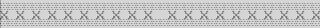
Nun etwas für den Erfahrungsaustausch
der Graphicians unter uns..
Ich bin selber 'n Gfx'ler und will mit
den Paintern unter euch etwas rumreden.
Hauptsächlich painte ich Logos für
Groups, Handles.. und am besten
(und liebsten) zeichne ich in Fli.
Hier bei mir liegt ein einziger Fli-Edi
namens "Emc-Editor". Ein simples Teil,
mit jedoch hervorragender Zoom-Funktion.
Farben können mit 0-f gewählt werden,
nur eine line+fill-Funktiion ist vor-
handen (kein copy!!). Man kann sämtliche
Gfx-Formate, wie Koala, Blazing, Amica,
Paint Magic + + einladen.
Alles schön und gut, aber ich brauch'
einfach mehr Funktionen, die das
Rumpainten etwas erleichtern.
Welche Fli-Painter könnt ihr denn so
empfehlen??
Antworten auf meine Frage in diese
Rubrik!
Nochwas : Für jeden Graphician, der
fast nur in Multicolor zeichnet, eignet
sich COLOR-X echt am genialsten!.....
Das Teil ähnelt Amica-Paint, hat jedoch
nicht soviel Funktionen, die Bedienung
ist jedoch irgendwie einfacher.
Das Teil war auf der Magic Disk 12/94.
S.U.C.K
{kind=link}
░░░░░░░░░░░░░░░░░░░░░░░░░░░░░░░░░░░░░░░░ >>>>>>>>>>> UTILITY - TEST <<<<<<<<<<<<< ✻░░░░░░░░░░░░░░░░░░░░░░░░░░░░░░░░░░░░░░░░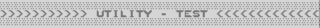
2121) Auf der MAGIC DISK 6/95 ist ein
interessanter Noter vom ehemaligem
AIRWOLFTEAM erschienen :
Nämlich der ULTRFLASH-NOTER!
gecodet wurde er von Thunderblade.
Wie typisch unterscheidet sich auch
dieser "Noter" von einem "Writer"
und speichert sich neben dem Brief
selbst auch ab.
Allerdings blieb mir Folgendes immer
noch unklar : Das Programm ist im
©opyright vom Computec Verlag,
Trotzdem wird es ja automatisch wei-
kopiert und was nun legal ist, steht
nicht offen. Meiner Meinung nach
kann man diesen, wie auch alle anderen
Noter getrost weiterkopieren (keine
Gewähr!).
Kommen wir zum Testbericht...
Features :
15 (!) FLASHES mit Ctrl+ A-O wählbar
3 CHARS mit Funktionstasten erreichbar
(F1= 1 x 1 Char.I., F3= 1 x 1 Char II ,
F5= 1 x 2 Char)
Delete/Insert/Centre/Left Pos./
Reight Pos. Line/Page
Leider nur 30 Seiten editierbar
Textfarbe mit F7 wählbar
Rasterbars editierbar
Effekt bei Seitenumschaltung wählbar
Musik bei $1000-$2000 nachladbar
1x1 Char(s) und 1x2 Char nachladbar
Dir-Funktion
Parameter-Einstellungen möglich
Bei'ner fertiger Note können die Seiten
mit Space oder +/- umgeschaltet
werden
...
Die Bedienung ist erfreulicherweise gut
gelungen, aber das ist bei Notern
kein Wunder...
Ladeprobleme sind noch nicht aufgetre-
ten, genauso wie Abstürze.
ein Nachteil ist die begrenzte Anzahl
der editierbaren Seiten. Obwohl die
meisten Noter bis zu 50 Seiten
schaffen, erreicht dieser nur 30.
Aber 50 Seiten hätte der Speicherplatz
des C64 aufgrund der vielen coolen
Funktionen sicherlich nicht hinbekom-
men.
Auf der Diskette befinden sich noch
7 Musiken und viele 1x1+1x2 Chars.
Fazit :
Ein sehr guter Noter, besser gesagt
ein "Luxus-Noter". Was etwas nervt
ist die langsame Unmschaltung
der Seiten. Aber darüber muß man sich
einfach gew[hnen. die flashes können
sich auch gut zur Musik anpassen.
z.b.: bei einer langsamen + ruhigen
Musik nimmt man am besten den dunkelen
& lahmen Flash, bei 'nem heißem Tekkno-
Sound nimmt man den "Overlay-Flash".
dieser Flash besteht aus zwei Farben,
die sich ständig wechseln und somit
eine weitere Farbe bilden.
Diese Sätze gehörten eigentlich nicht
zum Fazit (peinlich!) ...
Bezugsquelle : X-Dome #2!
(solange es keine
©opyright-probleme
gibt. Ich werde erst
mal nachfragen...)
S.U.C.K
{kind=link}

Review 1
░░░░░
░░░░░░░░░░░░░░░
░░░░░░░░░░░░░░░░░░░░░░░░░░
░░░░░░░░░░░░░░░░░░░░░░░░░░░░░░░░░░░░░░░░
B E R A N I A
░░░░░░░░░░░░░░░░░░░░░░░░░░░░░░░░░░░░░░░░
✻ Erstes Buch : Der Kampf 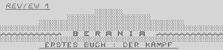
Wälder mit schönstem Grün, Luft der
saubersten Art, Wasser der erfrischend-
sten Sorte, Himmel mit dem schönsten
Blau, Früchte so saftig wie nichts
anderes, die interessantesten Inseln,
Berge höchster Größe und ein Kampf
der schlimmsten Art - das ist Berania!
Es herrscht Krieg zwischen den
Menschen, den Orks und den Eemen.
Karsas, ein mächtiger Herrscher, der
zu Menschen äußerst nett reagiert,
will alle Eemen und Orks aussterben
lassen. Jedoch sind beide Rassen
sehr schwer zu besiegen. Zum einen
sind die Eemen (Mischung aus Menschen
und den ausgerottenen Elfen) schlau
und benutzen viel von ihrer Magie,
zum anderen sind sie im Kampf fast
genauso kalt wie die unglaublich
starken und brutalen Orks, die neben
vielen gewonnen Schlachten auch viele
Niederlagen zu "leiden" hatten.
Allerdings sind keiner dieser Rassen
wirklich schlechtmütig.
Aber Karsas will, daß nur die Menschen
überleben...
Eines Tages stehen jedoch zwei fin-
stere Gestalten vor deiner Tür.
Als du sie herein lässt, findest du
heraus wer es ist : Deine Halbschwester
Banshi, die Eeme und ihr Kumpane
Morgul, ein Ork. Ihr beschließt diesen
sinnlosen Krieg zu stoppen, es hat
schon zu viele Leben gekostet!
---
Zu erst mal etwas ungewöhnliches die-
ses Spiels : Es besteht aus zwölf (!!)
Diskettenseiten. Man merkt schon die
Komplexität des Programmes...
Amos, das sind die Hersteler des
Rollenspiels "Die Prüfung". Dort wurde
angegeben, daß Berania, also dieses
weitere Rollenspiel erscheinen
würde. Plötzlich hat Kingsoft die
Vertreibung neuer C64-Games eingestellt.
Da "Die Prüfung" auch von Kingsoft
vertrieben wurde, dachten die naiven
C64-User gleich, dieses Game würde
nicht erscheinen. Tja, gearscht!
Falls die Verkaufszahlen die Program-
mierer zufriedenstellen, erscheinen
weitere Teile dieses Spiels.
Zum Game : Die Titelgrafik und auch
sonstige Zwischenbildchen im Spiel sind
ordentlich gelungen. Ich sage deshalb
"Zwischenbildchen", weil man die Grafik
des Games nur durch ein kleines Fenster
oben-links des Bildschirms sieht und
man wegen der enormen Größe der Städte
und des Landes manchmal total den
Überblick verliert. Die Zwischenbildchen
erscheinen eben nur im Fenster.
Wie gesagt ist das Land recht groß und
besteht auch aus einigen Inseln.
Mit einer beiliegenden Karte kann man
sich zurechtfinden.
Man kann in Städten rumlaufen, Leute
anlabern und wichtige Dinge erfahren,
durch herumschnüffeln Waffen, Rationen
usw. finden oder man kann u.v.a. auch
handeln! Außerhalb der Städte trifft
man auf Hooligans (nein, keine DJ's..),
Zauberer, Soldaten etc. und diese
können einen wirklich belästigen,
besonders wenn man gezwungen ist, mit
ihnen zu kämpfen und nicht flüchten
kann. Bald dämmert's jedoch und es
wird Nacht. Nun treten die Monster
in Aktion und Feinde trifft man umso
mehr. Gegen Skelette, Riesenskorpione
etc. gibt es fast keine Chance.
Auch kann man sich ein Schiff besorgen
und/oder sich auf einer Insel bzw.
anderen Teil Beranias fahren lassen.
Das alles kostet Geld, das man durch
Eroberungen von Kämpfen und dem Handel
ergattern kann. Aber es gibt auch 3D-
Dungeons,in denen wo man auch was finden
kann... Die steuerung erfolgt per
Joystick. Es empfiehlt sich sehr,
Module aller Art, besonders das
Action Replay, Final Cartridge oder
die Nordic Power vom Expansion-Port
zu entfernen, da sie das Laden eh nicht
beschleunigen und zu absolut
"überraschenden" und ärgerlichen
Abstürzen führen können!
Die Anleitung besteht aus 14 DinA4
Seiten, die viel über die Story
erzählen. Allerdings sind die Beschrei-
bungen des Spiels etwas unklar. Nach
genauem Durchlesen und Probieren
gibt's jedoch keine Probleme.
-BEWERTUNG-
Grafik =(Titelbild) 87%
(Im Spiel) 41%
Sound = 30%
Motivation = 86%
Gameplay = 74%
✻Schwierigkeitsgrad = 7,8 - 8,1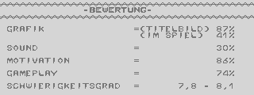
GESAMTNOTE : > 2+ <
Fazit : Das tolle Feeling bei dem
Spiel und die spitzen Story fesseln
einfach. Technische Mankos senken
den Spielspaß nur minimal.
Die Spannung ist das Starke am Spiel!
Auch der Schwierigkeitsgrad ist erst
mal zu knacken. Rollenspiel-Fans
ist das Game blind zu empfehlen!
Andere sollten erst mal hereinschau-
en. Ein preview dieses Games gibt
es aus technischen Gründen leider
nicht.
Bezugsquelle und zur Verfügung
gestelltes Testmuster :
Micky-Doodle-Funk Software
Dirk Valkyser
In Het Veld 21 PREIS DES SPIELS:
47608 Geldern-Veert >> 49 DM <<
Tel.: 02831/3830
ACHTUNG!!
X-Dome Leser bekommen 5 DM Rabatt,
wenn sie sich bis zum 31.8.95 bei
der obigen Adresse das Spiel bestellen!
Ihr müßtet eben angeben, daß
ihr X-Dome Leser seit...
-- -- -- -- -- -- -- -- -- -- -- -- --
Die Bewertung ist nicht nur von mir,
sondern auch von meinem Bruder, dem
Strategieprofi.
S.U.C.K
{kind=link}

++++
+ + + +
+ +
++++ ++++ + ++ + ++
+ + + + + + + + +
+ + + + + ++++ + ++++
++++ ++++ + +++++ ++ +++++
+
+
++++++++ + X - D O M E
+ +
+ + + ++++ ++++++
+ + + + +
+ + + + +++++
+ + ++++ ++++++
+
+
+
+
+
✻🭸🭸🭸🭸🭸🭸🭸🭸🭸🭸🭸🭸🭸🭸🭸🭸🭸🭸🭸🭸🭸🭸🭸🭸🭸🭸🭸🭸🭸🭸🭸🭸🭸🭸🭸🭸🭸🭸🭸🭸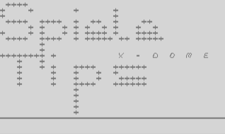
Hier kann wirklich JEDER seinen Senf...
dazu geben. In der nächsten Issue
Erwarte ich eine große Menge an Tips &
Tricks aller Spielearten.
Die Tips & Tricks sind in verschiedene
Bereiche eingeteilt :
CHEATS, POKES, TRIXXER & TOTAL WORK!
(Total Work! = Komplett-/Teillösung(en))
In dieser Ausgabe werden nun endlich
die Tips & Tricks veröffentlicht, die
aus Zeitmangel nicht mehr in die
BKC #4.kamen. Auch gibts 'n paar
Schüsse von mir und Fat Bob.
S.U.C.K <<<
🭸🭸🭸🭸🭸🭸🭸🭸🭸🭸🭸🭸🭸🭸🭸🭸🭸🭸🭸🭸🭸🭸🭸🭸🭸🭸🭸🭸🭸🭸🭸🭸🭸🭸🭸🭸🭸🭸🭸🭸
CHEATS
Thrust : Bei diesem Spiel könnt ihr mit
der FC III die Spritekollission ab-
schalten. Wenn euch aber der Sprit
ausgeht, hört ihr nicht mehr auf zu
fallen.
Raveman
Gaunlet 2 : Wenn man länger wartet,
verwandeln sich alle Mauern in Exits.
International Karate : Wenn man am Boden
liegt, ganz schnell auf Pause drücken,
Dann wieder weitermachen und unser Mann
steht wieder.
Fist II : Vor dem Kampf 3 Restore
drücken und der Gegner ist schwach.
Teddy de Baer
Creatures 2: 1351-Maus einstecken, Titel
ganz ansehen, dann hat man unlimited
Lives. Mist
POKES (reset, poke, sys)
I Ball : Poke 20669, 234 und 20670, 234:
Sys 49741. Der zweite Poke muß vor dem
Starten eingegeben werden.
Choplifter : Poke 10142, 205
Raveman
Druid : Poke39271, 255: Sys5120
Elevator Action :
Fora=50911 to 50915:Pokea,234:next:
Sys 53200
Great Giana Sisters : Poke2446,255:
Poke6697,255:Sys2098
Mutants : Poke9273,230:Sys4096
Checky
TRIXXER
Microprose Soccer : Hier kann ich jedem
nur empfehlen, das Wetter auszuschalten
und die Banana-Flanken auf HI zu
stellen.
Teddy de Baer
Defender of the Crown:
Hier Angaben zu jedem Land und dessen
Stellung:
1░2
3░4░5
6░7░8░9░10
11░12░13░14
15░16░17░18
░-hat nichts zu bedeuten
Territory: Vassals: Income:
1: Cumbria. 0 3
2: Yorkshire 6 2
3: Suncasnire 6 4
4: Nottingham 0 2
5: Sincolnshire 6 3
6: Gwynedd 4 2
7: Clwyd 0 3
8: Leicester 5 2
9: Cambridge 6 5
10: Norfolk 0 6
11: Glamorgan 4 1
12: Gloucester 12 7 Top
13: Buckingham 0 8
14: Essex 8 6
15: Cornwall 0 8
16: Dorset 6 4
17: Hampshire 8 3
18: Sussex 8 7
Teddy de Baer
Sleepwalker : Es gibt einige Monente,
da wünschte man sich, daß Ralph höher
springt als er es sonst macht. Oft
hilft es sehr, wenn ihr so hoch springt
wie es geht und dabei noch mal eine
Keulenattacke macht.
S.U.C.K
TOTAL WORK!
Zum 64'er-Textadventure Quasimodo :
S,S,nimm Orden,S,S,nimm Flasche,N,N,N,W,
gib Orden,N,O,trinke Flasche,nimm Opfer,
S,S,S,O,öffne Schrank, nimm Streichholz,
W,W,zünde Dynamit,geh Loch,gib Opfer,
nimm Kreuz, hoch, O, O, O, O, nimm Buch,
gib Kreuz.
Raveman
---
Naja, nicht grad sehr viel, aber für den
Anfang reicht's. Keine erste Ausgabe ei-
nes Mags ist perfekt. Also, vergeßt
nicht : Schreibt wie Hölle und Teufel
an den Erfasser!!

DER ASSEMBLER-KURS
Hi Freax!
In diesem kleinen Kurs wollen the Pink
Punker und ich (Checky) euch die Spra-
che Assembler ein wenig näher bringen.
Der Kurs wird folgendermaßen geführt :
eine Folge ich, die nächste Tpp, die
danach ich, usw.
Wie immer könnt ihr euch bei
Fragen hier melden oder direkt an
uns richten (Addies im Addy-Corner).
Den zweiten Teil werde ich aber auch
noch machen. Wie weit der Kurs geht,
hängt nur vom Feedback ab.
So, nun wollen wir langsam anfangen.
Dieser Teil wird sich mit dem
warum/weshalb Assembler und dem Spei-
cheraufbau befassen.
==========================
Warum überhaupt Assembler?
==========================
Tja, zum einen ist da sicherlich die
Schnelligkeit und Speichergröße zu
nennen.
Zur Schnelligkeit ein kleines Beispiel :
5 a=0
10 poke53280,a : if a=15 then 30
20 a=a+1 : goto 20
30 a=0 : goto 10
run:
Und nun das ganze in Assembler (das
Basicprog schreibt bloß den Assembler-
code in den Speicher) :
10 i=4096 : restore
20 readx : if x= -1 then end
30 i=i+1 : goto 20
40 data 162, 0, 238, 32, 208, 232
50 data 224, 15, 208, 248, 76, 0, 16
60 data -1
run:
sys 4096
Hier dürfte jetzt wohl schon die Aus-
führungszeit zwischen Basic und
Assembler klar sein. Ein zweiter Vor-
teil von Assembler ist die Kürze die-
ser Programme.Außerdem kann man bestimm-
te Effekte nur in Assembler erzielen.
==============
Speicheraufbau
==============
Unsern Compi kann man sich in kleinen
Schachteln vorstellen, wovon es 65536
gibt. Davon sind immer 255 (die null
wird immer mitgezählt; also 256) zu
einer Page zusammengefaßt. Die erste
Page wird logischerweise Zeropage ge-
nannt. Diese Page nimmt noch eine Be-
sonderheit an : Auf dieser 'Seite'
wird sehr schnell zugegriffen. In der
Zeropage werden wichtige Werte
zwischengespeichert, genauso wie in
den nächsten beiden Seiten. Man kann
also sagen, daß von 0 - 1023 ($03ff)
alle wichtigen Werte gespeichert werden.
danach kommt der Bildschirmspeicher,und
zwar von 1024 ($0400) - 2039 ($07f7).
Hiernach machen sich 8 Spritepointer
breit (von 2040 ($07f8) - 2047 ($07ff)).
Danach folgt der Basicspeicher von
2048 ($0800) - 40959 ($9fff). Als
nächstes kommt der Basic-Interpret bzw.
Ram (40960 ($a000) - 49151 ($bfff).
Nun hat man einen komplett freinen
Ram-Bereich und zwar von 49152
($c000) - 53247 ($$cfff). Jetzt kommen
die I/O-bausteine bzw. Ram oder der
Charset (53249 ($d000) - 57343 ($dfff)).
Zu guter Letzt kommt dann noch das
Kernal oder wieder das Ram :
57344 ($e000) - 65535 ($ffff).
So, das wars für's Erste . Das nächste
mal , werde ich die Zahlensysteme er-
klären und die ersten Befehle (Opcodes)
besprechen (hätte ich zwar auch jetzt
tunn können, aber die Tipparbeit will
ich S.U.C.K ersparen).
CHECKY & TPP
Hey Checky! mir macht das Tippen Spaß,
besonders, wenn es ein Text ist, das
X-Dome würzt. S.U.C.K <<<
{kind=link}
"Rest"
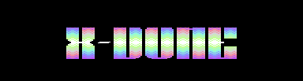 Diese Rubrik ist kein feste. Bei mir
sind nänlich Texte eingetroffen, die
nicht mal so früh eintreffen sollten!!
Aber egal, es freut mich zu sehen, wie
wild mit X-Dome erfahren einige sein
können. Also fangen wir an, es wird
nicht lang.
________________________________________
Nun zu den X-Charts:
Ich weiss nicht, wie die X-Charts nun
aufgebaut sind, da ich ja noch keine
neuere Ausgabe habe. Ich hoffe, sie sind
aber seit der Kennenlernausgabe gleich
geblieben. Trotzdem habe ich noch ein
bisschen dazugenommen.
BESTER CODER : tts/oxyron
BESTER PAINTER : cruise/elysium
BESTER COMPOSER: pri/tia/oxyron
BESTE GRUPPE : oxyron
BESTES DEMO : radio napalm/reflex
BESTES DISKMAG : skyhigh/oxyron
BESTE HARDWARE : Keine Frage:C64+Flash 8
BESTE SOFTWARE : im Moment Berania 1
(Meint ihr das mit
Software ???)
Phoenix/High-Tech
Hi Phoenix! Die X-Charts werden ab der
X-Dome#2 wie alle anderen Mags auch
aufgebaut sein (Votesheet,Punktezählung,
Charts!) S.U.C.K
........................................
Hi Hanny!
Ich hab' da ein kleines Problem mit
meinem Netzteil. Irgendwie scheint in
meinem Zimmer zu viel Strahlung zu sein.
Also, hier mal die Symptome:
Beim anschalten hört die Drive-LED nicht
mehr auf zu laufen. Mit 'nem anderen
Netzteil (das 'ne dickere Abschirmung
hat) läuft sie anstandsloss. Was kann
ich tun, damit meine zweite Floppy auch
mal wieder läuft???
Phoenix/High-Tech
........................................
Hi Raveman!
Tia, das mit Geos 3.0 hat sich ja wohl
erledigt. Dreistein hatte aber mal in
einem BKL geschrieben, daß Geos 3.0
einekomplett NEUE Version, also kein
Patch o.ä. ist.
Checky
Hey Checky! Bestimmt weist du ja schon,
daß Geos 3.0 überhaupt NICHT mehr er-
scheint. S.U.C.K
Anmerkung von Mist: Es wird inzwischen
schon wieder an einem anderen Betriebs-
system gearbeitet. Infos bei mir.
........................................
Hi Leo!
deine Musikroutine (BKC#4) funktioniert
nicht, das liegt daran, daß ein
Rücksprung zum Irq (jmp $ea31) fehlt.
Checky
........................................
FAT BOB'S LESERBRIEFE
Hi Fat Bob!
Da du höchstwahrscheinlich (nehme ich
mal an) die Texte packst/crunchst, hier
eine Frage dazu: Nach welchem System
machst du das? Ich benutze keinen
festen Packbyte. Danach folgt das Byte
und dann wie oft das Byte in den
entpackten Code geschrieben werden muß.
Das Verfahren liefert mir aber bis jetzt
mehr schlechte Ergebnisse, da sich das
packen erst ab 4 Bytes lohnt.
Und noch etwas anderes : tpp sagte mir,
daß du dich derzeit mit
Verktorprogrammierung beschäftigst, und
auch dazu eine Frage : Was für'n
Linien-Algorithmus benutzt du?
Checky
An checky und alle anderen!
Bitte schickt die leserbriefe gleich
an Fat Bob. Thanke du! S.U.C.K
Eine Antwort auf Checkys Brief von Mist:
Damit sich das Packen eher lohnt, kannst
du es so machen: Muss ein Byte öfter
abgelegt werden, so schreibst du in den
Speicher 192+Wiederholung. Darauf folgt
das zu wiederholende Byte. Soll z.b. die
null dreimal vorkommen, geht das mit:
195, 0. Dieser Algorithmus hat schon bei
drei Wiederholungen Erfolg. Allerdings
müssen alle Bytewerte ab 192 wie folgt
kodiert werden: 193, Bytewert.
Es gibt auch noch eine Menge anderer
(komplizierterer) Algorithmen. Die
Verbreitesten sind "Lempel-ziv" und
"Huffman". Bei Lempel-ziv ("lz") werden
auch noch Sequenzen gepackt; Huffman
ersetzt Nybble-Werte, die besonders
oft voorkommen, durch kürzere Bitfolgen.
die besten Ergebnisse bekommt man
natülich, wenn man beide Systeme
kombinniert. Mist
----------------------------------------
Die 64'er! (The Great Papermag)
Wer kennt sie nicht die 64'er?
Das Magazin das seit Anfang an dabei
ist und immer noch existiert.
Die Frage ist bloss, wie lange noch!
Jeder von euch weiss,dass es die 64'er
nur noch im Abo gibt.
Die Auflage ist nicht mehr sehr hoch
und die Seiten werden auch immer weni-
ger.
Es wird Zeit, daß wir etwas dagegen un-
ternehmen bevor auch noch dieses Mag
zugrunde geht.
Seit ein paar Monaten gibt es auch eine
Rubrik genannt "Scenen-News"; das sind
doch wir, oder?
Wenn jeder von euch bloss ein Bericht,
Spiele-Tip und einen Test über ein Demo
im Monat schreibt,könnten wir aus der
64'er vielleicht noch was machen.
Die Texte werden alle kostenlos abge-
druckt und für kleine Programme und
Spiele-Tips gibt es sogar ein Honorar.
Eine gute Möglichkeit sein Taschengeld
ein wenig aufzubessern.
Anm. von Mist: So einfach ist das nicht.
Ich habe im Sommer '94 mal einen Brief
an die 64'er geschrieben, da\ ich Kurse,
etc. schreiben könnte, hab aber nie
wieder was von denen gehört. Probiert
ihr es auch mal. Vielleicht...
also setzt euch hin und schreibt einfach
mal ein paar Zeilen.
Bestellt euch doch einfach mal eine Aus-
gabe zum einzelpreis von DM 9,80.
Adresse:
64'er Leserservice
Heiner-Fleischmann-Str.2
74172 Neckarsulm
Tel.:07132/969-181
Fax:07132/969-190
(Heftpreis+DM 6.- Versandpauschale)
Das Abo gibt es bei:
64'er Aboservice
74168 Neckarsulm
Tel.:07132/959-242
Fax:07132/959-244
Also dann schreibt mal schon an:
Magnamedia Verlag Aktiengesellschaft
64'er Redaktion
Postfach 1304
85531 Haar bei München
Telefon: 089/4613-0
Telex: 522052
Telefax:089/4613-100
Dann macht's gut!
The Pink Punker 4 X-Dome in 1995
----------------------------------------
RINGEN
Hey, an alle die mal eine andere Sport-
art kennenlernen wollen ausser Fussball,
Tennis oder Schach. Die meisten Leute
kennen die Sportart Ringen nur vom Namen
und interessieren nicht für diese Art
der Betätigung. Ist ja logisch, es ist
ja auch nicht so populär wie die er-
wähnten Sportarten.
Seht euch doch mal eine Meisterschaft im
Fernsehen an. Das ist ganz sicher nicht
so langgweilig wie ein Tennisspiel.
Beim Ringen gib es 2 verschiedene Arten
von Kampfarten. Die eine Art ist der
freie Ringkampf und die andere Art
Griechisch-Römisch.
Der Unterschied besteht darin das beim
Griechisch nicht die Beine angegriffen
werden dürfen, was beim freien Ringkampf
errlaubt ist.
Die Matte ist in drei Bereichen aufge-
teilt (wenn es jemand nicht wissen soll-
te, gerungen wird auf einer weichen
Matte). Der gelbe Bereich ist der aktive
Bereich,der rote der Passive und im
blauen Bereich wird der Kampf
abgepfiffen und im Gelben fortgesetzt.
Das Ziel des Kampfes ist es seinen
Gegner auf die Schultern zu legen. Natü-
lich gibt es auch einen Punktesieg.
Der höchste Sieg sind 15 Punkte, wobei
diese Regel nur für die Mannschaftskäm-
pfe gilt.Bei Meisterschaften geht es nur
bis 10 Punkten. Nicht jeder Kampf kann
so überlegen gewonnen werden. Beim
Mannschaftskampf gibt es für jeden
Schultersieg oder jeden überlegenden
Punktesieg (15 punkte) 4 Punkte für die
Mannschaft. Sollte er nur mit 1 Punkt
Unterschied gewinnen erhält er nur
2 Punkte wenn er 5 Punkte erreicht, dann
erhält er 2,5 P. Wenn er 9 P. erreicht
erhält er 3 P. und wenn er 11 erreicht
bekommt er 3,5 P.
Die Kampfzeit dauert bei den Schülern 2
mal 3 Minuten, bei den Erwachsenen
einmal 5 und dann nochmal 2 minuten.
Sollte es, bis die Zeit um ist, unent-
schieden sein, gibt es Verlängerung
wenn dann noch kein P. gefallen ist,
gibt es Schiedsrichter-Entscheidung.
Bei den Meisterschaften läuft es alles
ein bisschen anders ab.Da ist die Kampf-
zeit kürzer und eine Pause gibt es auch
nicht. Die Kampfzeit hängt davon ab, wie
alt man ist.Die Kampfzeit der Schüler
dauer 3Min.(13-14j),der Cadets 4Min.(15-
16j) und der Erwachsenen 5Min..
Wer Gefallen daran findet, kann sich
weitere Informationen bei tpp
(Armin Beck 08251/52655 in Aichach)
einholen.
Also dann tschau
Copyrihgt Mitch
Aichach,26.07.95
Im Auftrag von The Pink Punker
{kind=link}
T H E D A N C E - C O R N E R

Welcome to the World of
███████ █████ █████ █ █ ████ █████
█ █ █ █ █ █ █ █ █
█ ███ █ █████ █ █ █ █
█ █ █ █ █ █ █ █ █
█ █████ █████ █ █ █ █ █████
✻________________________________________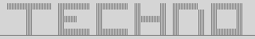2525)
Ich grüße euch zu ersten DANCE-CORNER.
des X-Dome! Diese Rubrik werde ich
voll und ganz unterstützen, ich hoffe,
ihr tut das auch. Ich werde gleich
einen rieeeesigen Text über Techno
schreiben. ab der nächsten Ausgabe
gehts los : CD-Reviews vom Feinsten,
news aus der Raver-Szene, Vorstellung
neuer Compilation-CD's etc.
Und natürlich könnt IHR hier mitmachen!
Stellt Fragen zu Techno, schreibt
Berichte über Rave-Parties,
CD/LP-Reviews und alles was ihr euch
noch so vorstellt.
Aber - die Leute unter euch, die kein
Techno mögen.. Was wird mit euch?
Also, wer eine eigene Rubrik für eine
bestimme bzw. für bestimmte Musik(en)
haben will, soll sich bei S.U.C.K mel-
den. die Rubrik muß gut unterstützt
und ausgestattet werden.
Ok, nun werde ich Techno von oben bis
unten ins kleinste Detail beschreiben.
Auch bekommt ihr einen umfangreichen
Techno-Lexikon zu sehen, der nur der
Wahrheit entspricht und keine falschen
Gerüchte ausweist! Die Erfahrung für
die Texte habe ich aus Zeitschriften,
Sendungen, Videos, CDs/LPs/MCs usw.
der Text ist in verschiedene
Abschnitte unterteilt...
🭸🭸🭸🭸🭸🭸🭸🭸🭸🭸🭸🭸🭸🭸🭸🭸🭸🭸🭸🭸🭸🭸🭸🭸🭸🭸🭸🭸🭸🭸🭸🭸🭸🭸🭸🭸🭸🭸🭸🭸
THE STORY OF TECHNO
✻
So um 1984 entstanden immer mehr DJ's
der House-Music, die in Amerika entstand
und hauptsächlich zum Tanzen geeignet
war. 1986 erschienen auch immer mehr
House-LP's, die die Freax in der Disco
aufheizen sollten. DJ's, wie DJ Dr.Motte
(einer der totalen Urväter des Techno..)
wollten die Techno- und Housemusic
bekannter machen.
Bald brach ein kleine Revolution aus :
die Musikgruppe namens "Kraftwerk" läu-
tete mit dem Satz "Wir sind die Roboter"
das Zeitalter der Computermusik ein.
Unmengen an Parties und Clubs enstanden.
Die Fans nahmen immer mehr zu, genau
wie die DJ's, welche dazu immer bekann-
ter wurden! So ging das immer weiter,
bis wirklich alles erschien, von
sehr vielen Techno-Richtungen über
die eigene Mode und Sprache bis hin zu
den größten Veranstaltungen überhaupt!!
TECHNO-PARTIES
✻
Inzwischen gibt es einige Großveranstal-
tungen, die viele Raver aus der ganzen
welt (!) anlocken. Diese Megaparties
nennt man eine "Rave". Sie sind das
Zeichen für Love, Peace & Unity, und
geben allen ein Gefühl, den sie nicht
vergessen werden! Ein gutes Beispiel
für so eine Rave, wäre die Loveparade,
die jedes Jahr in der ersten Juli-Woche
am Ku'damm in Berlin gefeiert wird.
fast alle bekannten DJ's wie Mark'oh,
Sven Väth, Marusha, Dr.Motte usw.usw.
sind dort. Die Loveparade wird für jeden
ein unbeschreibliches Erlebnis sein.
Kommen wir zu der Rave die wirklich
jeder kennt - die Mayday! Die erste
Mayday erschien 1991 und ist bis jetzt
zu einem der bekanntesten und besten
Raves geworden.Die Mayday erscheint
zweimal im Jahr.
Für die Hardcore-Fans gibt es die
äußerst beindruckende Thunderdome-Rave.
In diesen Raves wird man nahezu
verrückt! Aber das ist kein großes Wun-
der, es wird ja fast nur Hardcore und
Gabber (wer diese Wörter nicht versteht,
braucht nicht lange zu warten. im
Techno-Lexikon erfährt ihr alles..)
aufgelegt.Die Lasershow der Thunderdome-
Raves sind immer wieder überwältigend!!
allerdings erreicht die Thunderdome
nicht die Besucherzahl (Raver) der
Mayday, da Hardcore nicht so bekannt
ist wie Rave.
KOMMERZIELL ODER NICHT?!
✻
Dieses Thema ist wirklich aufwendig..
Die nichtkommerzielle Techno-Musik
(Underground-Techno) ist viel beliebter
als die kommerzielle. Mark 'oh und
Marusha z.B. wurden auf einer Mayday
anfangs ausgebuht, weil sie zu kommer-
ziell sein sollten.Was heißt kommerziell
und was heißt nichtkommerziell?
Als kommerziell werden die DJ's bezei-
chnet, die eigene Maxis verkaufen,
Video-Clips drehen und mehr solcher
Dinge. Der nichtkommerzielle Stuff
ist eben nicht so bekannt, wie die
kommerziellen DJ's & Producer.
----------------------------------------
███ ███ ███ █ █ ███ ███
█ █🭸 █ ███ █ █ █ █
█ █████████ █ █ █ ███
SZENE-MINI-LEXIKON
----------------------------------------
✻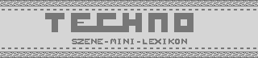
(Die Zeichen, die unter den Techno-
arten sind, sind Kennzeichen für
die jeweilige Techno-Art über dem
Zeichen, d.h. Acid = \, ambient = ^
etc. sie werden demnächst für die
Reviews & Previews benutzt..)
---
ACID : Die Acid-Tracks wirken oft
angreifend auf das Ohr.
Es sind krasse, z.t. kratzende
und piepsende Klänge. Acid ist
recht perkussiv und meist
langsam.
AMBIENT : Dies ist eine Techno-Richtung
mit soften und metallischen
Klängen. Ambient ist die
totale elektronische Musik.
Auch ist es die leichteste
Techno-Art, die es gibt.
AMBIENT-RAVE : Dies der normale Rave-
Techno, mit den Eigen-
schaften von Ambient,
also metallische und
experimentielle Sounds.
Als Beispiel für Ambient
wären hier die neusten
Tracks von Jam & Spoon.
BPM : Die Abkürzung für "Beats per
Minute" . Hyper, Hyper/Scooter
packt 168 bpm, viele Trance-Traxx
nur 120-140 bpm, Hardcore- und
Gabba-Traxx liegen zwischen ca.
175-240 bpm. Das schnellste
Track der Welt, das auch in dem
Guiness-Buch der Rekorde zu
finden ist, heißt "Thousands"
von Moby. Es schafft 290 bpm,
allerdings ist es ein absolut
schwachsinniges und kurzes
Track.
BREAKBEAT : Hier werden
Hip-Hop-Rhythmen doppelt
so schnell abgespielt und
mit Sounds, Sprachfetzen
etc. "verfeinert".
Das gibt meist eine recht
hohe bpm-Zahl. The prodigy
sind, soweit ich weis, die
einzigen kommerziellen
Breakbeater. Der
Underground-Breakbeat
wird auch bei vielen
Ghetto-Kids gehört, statt
nur irgendwelchen Rap.
BAUSTELLEN-RAVE : Dies war eine Rave
in Koblenz auf
offener Strasse.
Ohne irgendwelchen
Eintritts-Geld konnte
man dabei sein und es
ging total ab dort.
Während sich Mayday
und Loveparade stän-
dig wiederholen,
gab es diesen Rave
bisher nur einmal.
Mal sehn, ob's in
Zukunft so bleiben
wird...
BONZAI : Erfolgreiche und qualitiv
sehr gute Hardcore-/Ravecom-
pilation aus dem Underground.
BRAINDEAD : Hardcore-Compilation,
ohne großen Erfolg. Bisher
sind nur zwei Teile er-
schienen.
COMPILATION : Das sind Techno-Track-
Sammlungen auf CD.
CHILLOUT-ROOM : In jedem größerem Rave
vorhanden. das sind
Räume, indenen man sich
bei soften Trance-
klängen etwas relaxen
kann.
CLUBWEAR : Das ist die Mode der Techno-
szene! Ausgeflippt, immer
anders, witzig, kitschig
und manchmal auch derb.
CRACK : Bekannte Techno-Droge, die aus
verarbeitetem Kokain besteht.
Kann schon bei einmaliger
Einmahme süchtig machen und
verursacht extreme Müdigkeit,
Angstzustände, Kopfschmerzen
"etc."
DJ/DJane : Männlicher/Weiblicher
Disc-Jockey.
DROGEN : Erfrischungstabletten
(Ist das etwa sarkastisch?)
E : Kurz und knapp für "Ecstasy"
(auch "xtc"), der wohl bekannteste
Techno-Droge, welche Übelkeit,
Depressionen, Herzrasen,
Kreislaufzusammenbrüche und mehr
auf dem Körper auswirken kann.
FLYER : Handzettel, der den nächsten
Rave ankündet. Findet man in
wirklich jedem Plattenladen
und mitten auf der Strasse -
von jemandem ausgeteilt!
GABBA : Kommt aus Holland.Diese Musik
ist die härteste Techno-Art
und einer der härtesten Musik-
arten der Welt! Gabba ist
schneller als Speed Metal und
ultrahart!! Der "Rotterdam
Gabba" ist der totale
Höllensound!!
GHB : Enthält Gammahydroxybutyrat
(Was für ein Wort!!) und führt zu
Gedächnisverlust, Atemnot,
Erbrechen und Schwindelanfällen.
HARDCORE : Hardcore hat den
härtesten Bass-Drum über-
haupt. Außerdem ist Hcore
die perkussivste Techno-
art. Im Underground und
bei Freax gilt : je rhyth-
mischer und dunkler der
Hardcore ist, desto besser!!
HARDCORE MEMBRANTERMINATOR :
Geniale Hardcore-/Gabber-CD aus dem
Underground!! Der Frequenzgang der CD
ist für Power P.A.-Boxen ausgelegt
und ist sodem ziemlich teuer! (Die CD
kostet um die 50DM!)
HARDTRANCE : Im Gegensatz zum normalen
Trance, ist diese Variante
 schneller, der Bass ist
schneller, der Bass ist
etwas härter und die
Sounds sind flotter.
Aber Hardtrance ist immer
noch ziemlich soft.
Sonst sind nicht viele
Unterschiede zwischen
Trance zu erkennen.
HOUSE : Der Wurzel der Techno-Musik
und jetzt eine der beliebte-
sten Techno-Arten. Im Gegen-
satz zu früher ist House ziem-
lich frischer geworden. House
ist recht langsam und
rhythmisch.
JUNGLE : Hier schlagen schnelle
Breakbeats um sich und ein
Rapper frischt alles mit
wilden Texten auf.
Jungle ist schmeller als
Breakbeat und hat auch einen
"wilden", eben Dschungel-Stil!
LABEL : Musikmarke.
LSD : Blättchen, die zu Horrortrips und
ernsthafter psychischer Schädi-
gung führen können.
LINE-UP : DJ-Liste bei Veranstaltungen.
LADY DANA : Sie ist derzeit die
einzigste Hardcore-Djane!
LIVE ACT : Die Live Acts lassen auf
Raves ihren Techno-Sound
wirklich live raus, also
mit Computern, Mischpulten,
Keyboards etc. etc.
Beispiel : die gnadenlos
verrückten Gabba-Artists
von "Neophyte" ließen im
Hintergrund ultraschnelle
Bass-Drum & Highheats aus
den Computern geben, einer
schrie ins Mikrophon sämt-
liche Anfeuerungssätze und
der andere fummelte live
an einer E-Gitarre rum.
Das Chaos war perfekt!!
POSSE: Bezeichnung für die Clique.
POPPERS: Noch eine Techno-Droge, die
zum Schnüffeln ist. Verur-
sacht Kopfschmerzen, Erbre-
chen, verätzen der Mund-
schleimhaut und steht unter
Verdacht, krebserregend zu
sein.
ROTTERDAM : Das ist die Zentralstadt
für Techno Hollands!
Für feinstem Hardcore+Gabba
aus dem Underground ist
Rotterdam die Zentrale der
Welt!
RAVE : So bezeichnete man die illegalen
Parties in England. Die Musik-
richtung "Rave" gibt es eigent-
lich gar nicht mehr. Heute
steht Rave jedoch für alles,
was mit Underground und Dance-
floor zu tun hat..
RAUSCHEN : Kult-Hardcore & Kult-Gabba
auf CD!!!! Bisher sind 9 Teile
erschienen!! Aus dem
tieeefsten Underground!!!!!!
SPEED : Speed besteht aus reinem
Amphetamin (also noch eine
Techno-Droge!), das für einige
Stunden den Kreislauf hoch-
treibt.
SAMPLING : Abmischen von Musikfetzen,
Geräuschen, Rhythmen und
Stimmen.
SAMPLER : Ein Track, erstellt aus dem
Sampling.
TRACK : Musikstück.
TRANCE : Die zweitleichteste Techno-
art.
Sehr abwechsungsreich und
experimentiell, aber auch sehr
langsam.
TECHNO : Was'n das?
THUNDERDOME : Aus dieser Compilation
wurde der Hardcore erst
mal bekannt, das war
1993, als die erste raus-
kam. Vier Monate später
kam die zweite, dann die
dritte, die vierte etc.
Bis heute sind neun Teile
inkl. Einer Megamix von
den ersten 5 Teilen und
einer X-Mas Edition
erschienen. Für die einen
ist Thunderdome der
totale Muß, für die ande-
ren ist sie absolut un-
anspruchsvoll.
VERSTRAHLT SEIN : Bezeichnung für das
Gefühl nach heftigem
Drogengenuß.
{kind=link}
✻ CCCCCCCCCCCCCCCCCCCCCCCCCCCCCCCCCCCCCCCC NMNMNMNMNMNMNMNMNMNMNMNMNMNMNMNMNMNMNMNM CCCCCCCCCCCCCCCCCCCCCCCCCCCCCCCCCCCCCCCC TECHNO-HAERTEGRAD IM UEBERBLICK : ________________________________________ ....................................... ....................................BQU ....................................BQT .......V..L.........................BQR ....................................BQQ ................V...................BQP ...................L................B Y ......................L.............B X ......................L.............B X ....................................B W ....................................B V ....................................B U ...............................L....B T ....................................B S ....................................B R ....................................B Q CCCCCCCCCCCCCCCCCCCCCCCCCCCCCCCCCCCCK P G H J X R ^ \ Y Z T ^ R b o g e v b d u n b b r l a e r t s c n a e e k v c e e t JJJJJJJJJJJJJJJJJJJJJJJJJJJJJJJJJJJJJJJJ **************************************** JJJJJJJJJJJJJJJJJJJJJJJJJJJJJJJJJJJJJJJJ JB
Wow, bis jetzt waren es 22 Fullscreen-
Seiten voller Infos über Techno!!
Ich hoffe, daß euch, besonders denen,
die Techno ihr Favorit in der Musik
nennen, diese Infos geholen haben.
Ab der nächsten Issue geht's dann
richtig los und ihr könnt mitmachen.
Auf dann,
S.U.C.K
{kind=link}
Cosmic goes straight up!
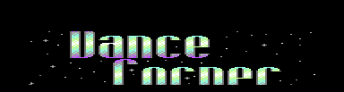Cosmic-Musik,heisst der neuerste Trend
unter den tausenden Musikrichtungen. Der
stampfende Beat wiederholt sich immer
wieder, gemischt mit Dschungeltrommeln,
Panflöten, Dudelsäcken oder einfach nur
afrikanischem Gesang. Das ganze hat aber
nichts mit Volkstümlichem gedudle und
schon gar nichts mit Klassik zu tun.
Kurzum ein Ethno-Tribal-Brazil-Funk-
Gemisch.
In mindestens 20 Diskotheken Bayerns
wird dieser Stil schon gepflegt, durch
DJ's mit klangvollen Namen wie:
Bogi,Enzo,Dibogo,Mandela,Pego....
erfunden hat das ganze DJ Steffan Egger
aus Innsbruck (Austria),dem der langwei-
ligen Dancefloor auf den "Sack" ging. Er
hat mittlerweile schon eine eigene Plat-
tenfirma,ein Tonstudio und 3 Vertretung-
en in Bayern,wo er die meiste Zeit auf-
legt.
Auf diesen Cosmomanias sind nie weniger
als 500 Leute.
Das grösste Event geht immer Anfang Juni
in der Innsbrucker Olympiahalle ab, in
der sich dann die 50.000 Cosmic-Begeis-
terten versammeln,um dort auf 13 Stunden
nonstop Afro,abzutanzen. Übrigens, es
gibt keine einzige Cosmic CD und wird es
auch niemals geben, da Cosmic immer nur
Events gespielt wird und daher die Lie-
der nie gleich sind,aber nicht verzagen,
denn auf diesen Cosmomanias gibt es MC's
der gastierenden DJ's zu erwerben und
diese gehen Weg wie "warme Semmeln".
In Deutschland gibt es ungefähr 10 Plat-
tenläden, die auf Cosmic spezialisiert
sind und bei denen die DJ's ihre Vinyl-
scheiben kaufen. Nur zum Vergleich: Eine
Dancefloor-Platte kostet um die 30 DM,
ein gute Cosmic-Platte um die 150 DM.
Wer jetzt meint: Das kenn' ich doch,aber
das heißt doch "Jungle", liegt komplett
falsch!
Wenn ihr wissen wollt, wo Cosmic aufge-
legt wird,hier ein paar Discos in Bayern
ern: M1-Aichach,Discovery Club-Augsburg,
X-Club-Herrsching am Ammersee, Halle 6-
Augsburg.
Das ganze ist nicht nur in Deutschland
inn, sondern auch schon nach Italien und
in die Schweiz durchgedrungen.
So, wer jetzt neugierig geworden ist und
auf dem neuesten Stand der Szene sein
will, dem schicke ich gerne Cosmic-MC's
für einen sensationellen Preis von 20 DM
+Versandkosten oder wer ein Cosic-Flyers
der neuesten Events haben will,gibt's
für 1DM+Versandkosten.
Wer einfach nur so Fragen hat, oder Er-
fahrungsaustasch sucht, contactet mich
unter:
Philipp Skrzypek Tel.:08251/5766
Ulrichstr.7
86551 Aichach Fax.:08251/5766
Bis auf Weiteres
DJ Cosrav
P.S.
Alle Info's sind auf Richtigkeit geprüft
bei Erwerb einer MC gehen die Rechte an
den Besitzer über,d.h. kopieren erlaubt!
{kind=link}
Willkommen zur ersten M O V I E - Rubrik!
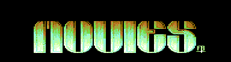 Ja, meine Leute, hier ist die erste
und ich hoffe, daß mir eine Menge
texte für diese Rubrik eintrudeln!
"Was sollen wir schreiben?", fragt ihr?
Ich erkläre es euch. Wenn ihr einen
neuen Kinofilm gesehen habt, ihn
kritisieren/loben wollt, dann schreibt
hier. Wenn ihr Kultfilme vorstellen
wollt, dann schreibt hier. Wenn ihr
brandneue Videos zum ausleihen
vorstellen wollt, dann schreibt hier!!!!!!
Nun ja, was ist neulich so erschienen?
Tja, da wäre mal "die Maske" mit Jim
Carrey, "Interview mit einem Vampir"
mit Brad Pitt und Tom Cruise oder
auch "Speed" mit Kianuh Riews, aber
auch "Time Cop" mit Jan Klaudia von
dumm. Lass euch was einfallen!! Sorry,
aus Zeimangel kann ich leider nix
für diese Ausgabe schreiben. In der
nächsten könnt ihr 100%ig sicher sein,
daß ich was für diese geniale Rubrik
schreiben werde. Übrigens : Bitte gibt
FSK, Film-Länge, ev. Preis und
ein objektives Fazit an. Und leiert
bitte nicht alles runter, sondern
erzählt mal die Story des Filmes.
falls der Film eurer Meinung nach
schlecht sein sollte, zählt auch die
Gründe für die mangelnde Qualität
auf!
Auf dann, sagt
euer
! S.U.C.K !